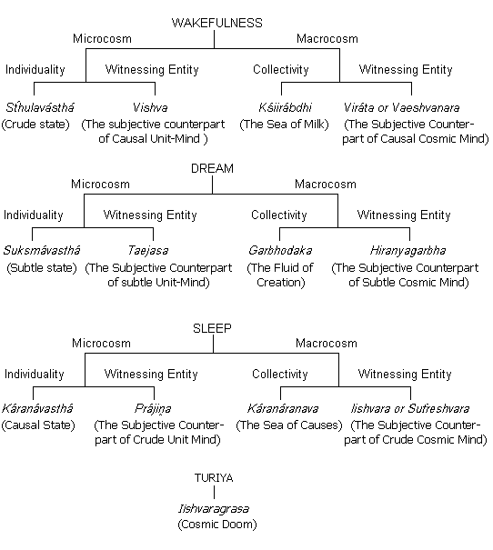

| Subháśita Saḿgraha Part 2 | ||
| Subháśita Saḿgraha Part 2 | ||
|
In ancient times when the desire to worship awakened in the minds of the primitive people for the first time, at that initial stage they took men of great wisdom and strength as the objects of their adoration. Before this they had been Nature-worshippers or physiolaters. When their mental hunger was no longer satisfied by the worship of mountains and rivers, trees and creepers, forests and seas, dawn and dusk, or thunder and lightning they took their first step towards the contemplation of God through the medium of hero-worship. As a result, a kind of incarnation doctrine came into being, ascribing full Brahma-hood to an aspect of manifestation. This practice was adopted in the name of religion, and was popular in society for many generations after. But the urges of the human heart are limitless. The desire to know their inner nature led human beings to the philosophical path, and as a result of philosophical dissertation and discussion their way of thinking gradually changed. They began to think how it was possible to attain the beginningless, indivisible, super-exultant self through such unit-worship – through the worship of the finite. When the realization dawned in their minds, they felt a great agitation – a mighty inner stirring in their hungry hearts, a longing to know the beginningless, endless, unmanifest, all-pervading Entity. How and what is that which the mind will apprehend with its entire being?
The first hint of Brahmabhávaná or intuitional science was mentioned in the ancient writing of the Rgveda. That first seed grew into a huge tree in the Yajurveda with numerous branches and twigs. At that auspicious moment, human intellect saw through the radiance of its supra-mundane knowledge, through its clairvoyance, that whatever it wanted in the material world emanates from and belongs to the Supreme Absolute Bliss – all are but the unit-manifestations of the Supreme Entity. None of these are its whole self. But it cannot neglect these units, for they, too, are not outside it. They too, are an inseparable part of the Supreme Entity.
The common people could not grasp the deep Brahmatattva or Intuitional Theory, and so they tried to hold on to the superficial, extroversial trappings of religion such as sacrifices, rites and rituals, making them the medium for their religious expression. But wise and educated people realized that as a result of this worship of the crude, people with a developed intellect and consciousness would gradually revert towards crudeness and gradually be transformed into crudeness. We must however admit that it is not possible to give up the effort to attain the crude in the form of physical necessities. Nevertheless, having food and clothing and other physical needs cannot completely satisfy the hunger of the human heart. At different times human beings have gone without clothes or anything for years or voluntarily renounced the world when it proved antagonistic to the deepest urges of their heart. So it will not do for human beings to think only of providing themselves with the crude necessities. If anybody leads this type of life, they will never experience bliss – they will always feel inside them the aching void of the desert.
So human beings concluded after due cogitation: since it was not possible to give up the units and since they would have to go in for the “whole” after all, they would just as well forestall their attachment for the finite by always keeping awakened in their minds, even while making use of the units, a sense of their being the image of that very Supreme Spirit. The pleasure-ward trend of the attachment would then be diverted towards the Bliss-ward course itself. By ascribing divinity to everything and thereby eliminating the limitedness of its littleness, humans would realize and enjoy the Supreme Bliss. In the Vájasaneyii Samhitá (Code) of the Yajurveda it is said, –
Ishá vásysamidaḿ sarvaḿ yat kiiṋca jagatyáḿ jagat
Tena tyaktena bhuiṋjiithámá grdhah kasyasviddhanam.
This world is changing, moving. The word jagat (world) is derived from the root, gam-kvip, which means moving. This universe is the psychic manifestation of Brahma. All thought processes are moving and restive, and that is why this world, the psychic manifestation of Brahma. All thought processes are moving and restive and that is why this world, the psychic manifestation of Saguńa Brahma (the Subjectivated Transcendentality), is moving and restive. A thing that appears beautiful today is not necessarily so tomorrow. A sandesh (sweetmeat) that is delicious today will not be fit for consumption after a few days. Indeed one cannot even vouch for its shape still being intact. Every unit is in a state of change, and that is why the pleasure derived from unit objects cannot last permanently. So what should a Sádhaka (spiritual aspirant) do? He or she must ascribe divinity to every unit object. Everything is the manifestation of God. Whether it is land, home, river, mountain, respect, insult, day or night – everything is He and His manifestation as a unit. Make proper use of all objects thinking that they are His gifts to us. To enjoy or endure anything is to enjoy or endure Him. Avoid the attraction of the unit and make contact with the integral whole. When you are able to live this way, the desire to steal the property of others will completely disappear. In Ananda Marga there is a special process through which one can dedicate everything to God. The ascription of divinity to objects means the pursuit of the Infinite, leaving the finite behind. Are you feeding your son? No, no, you are feeding the son-like manifestation of Brahma. Are you tilling the field? No, no you are serving the finite manifestation of Brahma with your plough. Really speaking, the ascription of divinity to objects precludes their material enjoyment, as the objects then merge in the non-material Supreme Brahma. Thus the mind of one, who has established him or herself in real Vaerágya (the renunciation of all sensual pleasures) can never become attached to finite objects. Even in their midst he or she remains beyond the reach of their attraction and gains eternal peace after death.
No truck with water while I bathe
With hairs flowing free
Nor woes nor griefs shall ever scathe
Unwet I dip in sea.
Dedicated to God, night and day
Awake, asleep or dreaming be
No lures of world or desires gay
Dare ever come between He and me.
Do your work, but do not be caught up with it. A great man said, –
Grind spices or be a cook
Touch not the pan you ever
Dance a frog ’fore serpent’s hook
But let it not devour,
In the sea of nectar shall you bathe
Unwet shall remain your hair
Tie the elephant to a spider’s web
Love awaits you there.
Here the spider represents the little unit, the Sádhaka. A Sádhaka will realize what divine love is like only when he or she prepares the cobweb of devotion and ties the elephant, the Supreme Entity to it.
Life is intimately bound up with work If people do their work ascribing divinity to each object they are involved with, then, because of their non-attachment to material pleasure, they cannot be bound by the reactions of their actions. Life also cannot be the cause of such bondage, nor for that matter can the reactions of one’s actions be the cause of future lives. Otherwise a person who lives a long life will perform many actions, thus creating many reactions of greater sorrow to be experienced, and one will be a victim of the actional cycle life after life.
Kurvanneveha karmáni jijiivisecchataḿ samáh
Evaḿ tvayi nányatheto’sti na karma lipyate nare.
Always ideate on Brahma and nurture the desire to live for a hundred years. You will thus not get caught up in the reactions to your actions. This is the only way, by which you can save yourselves from the bondage of your reactions.
The ascription of Brahmahood to all activities is only possible for a Sádhaka – it is only possible through spiritual practices or the Sádhaná of the átman (soul). To establish oneself in Brahma is not possible through the Sádhaná of the mind, racing up and down at the beck and call of the senses. The person who busies himself with the Sádhaná of the mind instead of that of the Átmań is, in fact running after darkness or an uncertain future.
Asúryyá náma te loká andhena tamasávrtáh;
Táḿste pretyábhigacchanti ye ke cátmahano janáh.
Those who are sensually and materialistically inclined destroy themselves because through their actions they deny their own souls. Whether they profess to recognize the existence of the soul or not, their actions are certainly detrimental to their self-development. In this material world you may have come across many people who acknowledge the existence of Brahma, who say that they recognize the existence of soul, argue over it and are not afraid even to shed blood for the preservation of their religion, yet in their individual lives they are always chasing after sensual pleasures. They are of the above type. They gradually drift away from light towards darkness, regressing from a developed human life towards animal life. Although they have attained a human body, they have not shown any interest in behaving in a way that is worthy of a human being. The foremost duty of a human being is Brahma-sádhaná or the worship of God.
Essentially the soul and the Supreme Soul are the same. It is the objects of the mind that are different. A person whose mind has accepted the Infinite as its object has indeed identified himself with the Supreme Soul. Now the question may arise; when the Supreme Soul is infinite in nature, how does the distorted idea of individuality come about, and what relation is there between the unit-soul and this observable world? The Dharma or characteristic of an individual is to advance from the finite towards the infinite, from a part to the whole. This characteristic emanates from the desire to attain happiness – for self-preservation. As long as the goal is not limitless, one cannot gain the eternal happiness of all the imaginable and unimaginable entities. The Supreme Soul alone is beginningless and endless, and that is why limitless happiness is only possible through the Supreme Soul. The pain of losing unit objects is far greater than the pleasure they give us. The suffering that one sees in the world is merely the pain caused by that loss. But a persons of wisdom are never affected by the pain of loss for they know that the cause of all suffering is one’s own Saḿskáras. These Saḿskáras are the reactions resulting from one’s actions, past and present.
The Saḿskára born of pleasure and pain or the consequential momentum that creates the state of microcosmic subjectivity in the Macrocosmic Consciousness and stamps the Integral Body with the seal of limited unit-hood, has got its rudimental cause in the Saḿskáras acquired by the Supreme Being in the state of bondage. Actually, it would be more accurate to call it the mental reflection of action and reaction instead of calling it the distortion of the Supreme Soul.
The individuality of the unit is not complete in itself. So until one merges in the Whole Entity, one’s suffering cannot be alleviated. I have already said that the Sádhaka’s sufferings are caused by the Saḿskáras which one created oneself. One should therefore not be afraid of experiencing these reactions or accuse Brahma of injustice on this account. Humans very often complain, “God, so you had this in store for me. Is this my reward for so much worship and so much charity?” Such complaints are foolish, even sinful. At the time of suffering a Sádhaka should reproach himself for his past misdeeds and refrain from evil actions in order to avoid more suffering in the future. Everyone should bear in mind that as long as the fire of woes is not extinguished – so long as the Saḿskáras are not burned one has got to suffer. That is why I say you must not find fault with others because of your Saḿskáras; they are merely the reactions caused by your own mistakes and misbehaviour. Do you not see in the reflection the same wreath that you put around the neck of a shadow? Poet Vidyápati said:
Countless miles and ages lie
Life to life, between me and Him.
Dogged by Fate and here am I!
The fault not His, but mine and grim,
Don’t get upset over your suffering and difficulties. Learn from your painful experiences and acts, and behave wisely in your next life. Accept the beginningless and endless entity as the object of your ideation and behave accordingly.
Anejadekaḿ manaso javiiyo naenaddevá ápnuvan púrvamarśat;
Taddhávato’nyánatyeti tiśt́hat tasminnápo mátarishvá dadháti.
He is the only entity which does not move. Where there is no difference of places, there is no movement. How can the all-pervading entity in whom everything exists, have movement? He is faster than the mind, as the motive force that exists in His psychic body, i.e. the motive force of His thought process, dictates the movements of all the entities of the world; it is from this that they get the impetus to move. The senses are not capable of understanding. This is because the movement of the senses is towards objects, and so-called motionless objects are merely external forms of His mental expressions, His efferent thought-waves. His Blissful Entity is resplendent in its original state beyond the sphere of the mind. It is because of the cognitive Entity that life and energy exist in the world and that all processes of creation are continuing in a planned way.
Tadejati tannaejati tad dúre tadvantike;
Tadantarasya sarvasya tadu sarvasyásya báhyatah.
He is moving. No, no, He is not. He is motionless like the stump of a tree. He is far away. No, no, He is not. He is very close. He is the life of my life. He is within you and me. He is inside and outside everything everywhere. When a Sádhaka becomes well-acquainted with His Blissful Entity, we say that he or she is established in Brahma. At that stage there is both internal and external unity. The mind remains indifferent to worldly attractions and one makes real acquaintance with the Supreme Being. Although the body remains in the mortal world, the soul is merged in the Supreme Soul. The mind then becomes unrecognizable. Whose mind is it after all? Poet Cand́idása has written, –
What pangs reside in Radha’s heart,
Unlistening she sits alone in solitude.
Even in reverie, her eyes fixed, skyward rest
Like a saffroned recluse, averse to food.
Unleashing strands, she watches the braid
Of her hair rich and flower-bedecked
With smiling gaze at the clouds staid
She whispers something with hands outstretched.
Like a pavonine couple, with eyes unmoved,
Exchanging thoughts with passioned glance,
Wooing Kaliya as though renewed,
Candidasa says, a novel stance.
This manifestation of this observable world is called Saiṋcara or Extroversion during its movement from the subtle to the crude, and the movement of the created units and the world from the crude to the subtle is called Pratisaiṋcara or Introversion.


Thus goes the cycle of evolution from the subtle to the crude and from the crude to the subtle. The movement of the unit is from the crude to the subtle. The path comprised of the extroversial movement away from and the introversial movement towards Brahma, is called the Brahmic or Cosmic System, which is revolving under the forces of Saiṋcara and Pratisaiṋcara.
Under the influence of Vidyámáyá (Introversive Force or Force of Macrocosmic attraction) the unit activates the centripetal or introversive momentum of His thought-process through his Sádhaná, and by worshipping Avidyámáyá (Extroversive Force or Force of microcosmic distraction) he extends the centrifugal or extroversive action of His thought-process and prolongs its duration. In Vidyá cognition predominates, whereas in Avidyá there predominates action (Vidyá is a Cognitive force, and Avidyá is an activating force devoid of cognition). Cognition and action should be balanced in the life of a Sádhaka, or else it will be difficult to move towards Brahma.
Andhaḿ tamah pravishanti ye’vidya mupásate
Tato bhuyáiva te tamo ya u vidyáyáḿratáh.
The person who worships Avidyá drifts towards darkness and the person who worships Vidyá goes even deeper into the darkness.
Anyadeváhurvidayányadáhuravidyayá
Iti shushruma dhiiráńaḿ ye nastadvicacakśire.
Vidyá and Avidyá have contrary concomitants. Neither of them has equilibrated movements. People with calm and collected intellect, Sádhakas with developed intuition, who could very well understand such things due to their judgment, have made the above declaration with regard to Vidyá and Avidyá i.e. salvation is not possible through the cultivation of only one of these two principles. For the attainment of salvation, there must be balance between Vidyá and Avidyá to move forward. Although the movement towards Brahma must be introvertive (Vidyá), one should not give up Avidyá completely in relation to the practical world. This also has got to be made compatible with one’s own spiritual way of life by ascribing normal and divine bearing to it. Here the balance between Vidyá and Avidyá refers to the equitable conduct and behaviour during the period of material enjoyment.
Vidyá incávidyá inca yastadvedobhayaḿ saha
Avidyá mrtyaḿ tiirtvá vidyayá mrtamashnuvte.
It is those Sadhakas who are well-versed in intuitional knowledge, who are able to properly grasp this extroversive and Introversive Science. They do not deny any of the principles of creation, preservation and destruction. Forestall death through proper Karma-Sadhaná, a pursuit of action without denying it, and attain immortality through valid knowledge.
Yastu sarváńi bhútá ni átmanyevá nupashyati
Sarvá bhúteśu cátḿánam tato na bijugupsate.
A person who sees himself in everything and everything in himself can never hate anybody or anything. The capacity to overcome hatred is the main characteristic of Brahamajiṋána or one versed in intuitional science. Because of their pervasive egalitarian vision, there is not the slightest chance of their committing any sin in secret.
Yasmin sarváni bhútániátmaevábhúdvijánatah
Tatra ko mohah kah shoka ekatvamanupashyatah.
When the sense of persuasiveness of one’s soul in all living and non-living objects awakens in one’s mind, one neither hankers after anything nor is one afraid of losing anything. One feels a sense of oneness with all objects and attachment and grief fade away.
Sa paryagácchukramakáyamavraḿamasúviraḿ shuddhampápaviddham
Kavirmaniiśii paribhúh svayambhúryáthá tatyato’rthán vyadadháccháshvatiibhayah samábhyah.
The characteristic of that Supreme Being is its all-pervasiveness. The Sádhaka or the practitioner of intuitional science gets installed in Him, and with His bearing the sádhaka eventually identifies himself with hIm. In that bearing of His abides the splendour of all-fulfilment – the seed of all-knowingness. “Tatra niratishavam sarvajiṋavijam.” The Supreme Being has no crude body. He is absolutely faultless, pure, sinless, all-mighty, all-observing, all-knowing, self-controlled and Svayambhú or self-creating. He is not comparable to anything or anyone – “Na tasya pratimá asti,”, i.e., He has no image. In Him there is unlimited forgiveness. From the very beginning He has been giving everything to the units and will continue to do so. Such, is the attitude of that Great Being. One who is dazzled by the superficial splendour of His creation and gets entangled in it through one’s extroversial tendencies forgets the great, noble Creator behind this creation. Is it not foolish to forget the Lord of the creation for the created? Mother is cooking. The son suddenly cries for his mother. Mother gives him a toy, and the son is so fascinated by the toy that he forgets all about his mother. But when a son does not forget his mother and stop crying in spite of the toy in his hand, then the mother is compelled to embrace him and take him on her lap.
The son, too, holds his mother with one hand, the toy with the other. God is compelled to surrender Himself to the wise Sádhaka, who does not forget Him for the love of this toy-like creation – who does not relax his efforts to attain God.
Andham tamah previshanti ye’ sambhútimupásate
Tato bhúya iva te tamo ya u sambhútyaḿ ratáh.
Those who run after Sambhúti or the glamour of creation and those who are obsessed by the fear of Asambhúti or the possibility of is destruction are both racing towards the world of darkness. A Sádhaka should look upon both Sambhúti and Asambhúti, i.e. creation and destruction, equitably and with equanimity. Scientists who are wholly and solely dedicated to the worship of Sambhúti and hermits who live in constant fear of destruction are both on the wrong path: they are not on the path of salvation. Only the person who uses judgement and accepts both of them attains immortality.
Sambhutiiṋca vináshaiṋca yastadvedobhayaḿ saha
Vináshena mrtyuḿ tiirtvá sambhútyámrtamashnute.
One who knows the truth about creation and destruction gets established beyond the reach of death. The observable world is subject to creation and destruction. The movement from creation to destruction at first glance appears to be absolute, but the person who has understood the secret of creation and destruction and has thoroughly understood the world system, is alone able to establish him or herself beyond the range of this system.
The last hurdle on the path to the attainment of deathlessness and the realization of Brahma is the Hirańyamaya Kośa of the unit. As long as the Hirańyamaya Kośa exists, the Sádhaka cannot realize the Absolute Truth. The glamour of creation and the fear of destruction always upset a Sádhaka. The Supreme Being in His infinite glory is situated above the causal mind (Hirańyamaya Kośa).
Hirańmayena pátreńa satyasyá pihitaḿ mukham
Tattvaḿ púśannapávrńu satyadharamáya drśtaye.
O God! Remove the shining veil of Hirańyamaya Kośa, so that we may establish ourselves in Satyaloka (the region of Truth) Thy abode, so that our minds may not be attracted to the brilliance of the Hirańyamaya Kośa. This was all that was said about Brahma in the Ishopanisad.
When a person progresses from the crude to the subtle as a result of his Sádhaná, all the bondages gradually start disappearing by themselves, and when a strong desire awakens in the mind to attain that pure consciousness within, the Hirańyamaya Kośa also gets destroyed. In each of the five different stages of mind i.e. (1) Kámamaya Kośa (Crude or Conscious mind), (2) Manomaya Kośa (Subtle or Sub-conscious mind, (3) Atimánas Kośa (Supra-mental mind), (4) Vijiṋánamaya Kośa (Subliminal mind), (5) Hirańyamaya Kośa (Subtle-Cosmic Mind) – (the last three are collectively called causal or astral or unconscious mind) some sort of finite object directly or indirectly remains, and this object becomes the cause of bondage – “Mana eva mauśya nám kárańam bandha mokśayo”. In other words the unit attains salvation only when she/he empties her/his mind of all objects. Just as an iron sword can perform acts of cruelty or merely cut the rope tethering and animal, similarly, according to its objective tendencies, the mind can also be the cause of both bondage and liberation.
All unit objects are external. Love for such unit objects can never be lasting, for the mind always keeps hopping from one object to another. That is why I say, withdraw your love from the unit and merge yourself in the whole. Don’t mistake the unit for the soul or God. The attainment of one’s inner self is only possible through love for the Infinite. Dońt pretend to be inferior and as a result become lazy. Fill your heart with love of the Infinite, and your soul will be transformed into the Supreme Soul. No worldly happiness is limitless. Dedicate yourself completely to the blissful ocean of the Supreme Soul. Then alone will you realize what happiness really is. This path to attain happiness, this Sádhaná of self-surrender I call absolute devotion. Carry on performing your worldly duties with sincerity, and at the same time think about the pure self within you. Then alone will your Sádhaná be justified. The constant thought of your pure inner Self will certainly one day establish you in your original source, and this is the ultimate aim of Sádhaná. The Soul is by nature characteristically pure. The mind gets tied to Saḿskáras (potential reactions) due to its actions, and that is why the unit becomes the slave of life and death. When all the Saḿskáras are destroyed through spiritual Sádhaná and mental purification, one goes beyond life and death to the eternal region of immortality, where there is no difference between the soul and His Supreme Soul. Amen!
| Subháśita Saḿgraha Part 2 | ||
|
The Vedas are the unique manifestation of human intellect. The etymological meaning of the word “Veda” is knowledge. This knowledge is of two types. One type is subject to time, space, and person, and the other is the realization of the self, independent of all subjections. The former is called Relative Knowledge or Aparájińána, because it is related to objects, and the latter, spiritual Knowledge or parájiṋána. Here the word, Veda, is of course used in the sense of spiritual knowledge.
Last Shrávańii Púrńimá I told you some thing from the Shukla-Yajurveda. Today I will tell you something from the Atharva Veda. Learned persons say that there is nothing important in the Atharva Veda. It is only a collection of mantras or incantations about ghosts and spirits, composed by people in prehistoric times. It is up to you to judge the veracity of the opinion.
One day, Vaedarbhi, the son of Bhrgu, asked the learned sage Pippaláda, “My Lord what is Intuitional Science (Brahmavijiṋána)? What is the relation between Brahma and the world? Please tell me something about them.” The sage replied:
“Aráiva rathanábhao práńe sarvaḿ pratiśt́itam
Rco yajúḿsi sámáni yajiṋahkśatraḿ Brahma ca.”
Just as the spokes are attracted to the hub of a wheel, similarly every object in this universe is Brahma-centric and thus has kept up its individual existence. The nucleus of the Cosmic System is the source of all entities from the highest of created being down to the lowest insect. Rk. (Incantations), Yaju (invocations), Sáma (songs) or the individuals engaged in Viprocita or Ksátrocita service (i.e. service befitting a Brahmin or a Kśatriya) – all are dependent on Brahma, the source of their existence.
Prajápatishcarasi garbhe tvameva pratijáyase
Tubhyaḿ Práńa prajástiimá baliḿ haranti yah práńaeh pratitiśt́hasi.
The word, Prajá, means evolved objects. Brahma is of course Prajápati or the Lord of evolved objects for He is the controller of all of them. Prajápati-brahmá moves about in the womb as the embryo and when it is born, the event, in fact, should actually be called the reflex birth of Brahma instead of His birth, because all created entities are merely manifestations of Brahma Himself. For instance, there is only one moon, but its reflection falling in the countless footprints of cows (Gośpada) appears as countless moons. No new moons are created. The same moon is being reflected in several receptacles. Similarly one Brahma is manifesting Himself over an infinite number of units in countless mental receptacles. Brahma is Absolute Bliss. That is why the units or microcosms are always racing with the help of their sensory and motor organs towards their inner selves, i.e. towards the attainment of happiness. So it is said that knowingly or unknowingly the units are moving towards Him to attain Him, filled with inspiration from Him. (Several times in the Atharva Veda the word, “Práńa”, has been used to mean Puruśa and the word, “Rayi” to mean Prakrti).
Devánámasi bahńitamah pitrńaḿ prathama svadha
Rśiińáiṋcaritaḿ satyamatharváungirasámasi.
Here the word, Deva, means the carrier of sensations, i.e., organs and nerves. Through the organs and nerves the body expresses a sensation or feeling and that is why they are called Devas or gods of the microcosmic body. But these organs and nervous systems are completely dependent on the spine for their existence and functions. Sensation is transmitted along the spine and that is why without a spine the unit would be a motionless, inert, fleshy mass. The above Shloka declares that, what spine is to the unit, Brahma is to the universe. Without Brahma the universe would be utterly destroyed, the seed of the imagination would be completely obliterated. According to an ancient custom, the death rites in honor of the deceased used to be performed by using Svadhá mantra (i.e., an invocation chanted while offering a sacrifice to the spirits of the dead). That is why, it is said that Brahma, as the first and foremost point in order of succession, is as important to all mundane objects as the first recipient of obsequial oblations is to the subsequent ones. To the sages He is as sacred as the vow of truthfulness. By Rśis or sages I mean those who have hastened the advancement of human civilization by inventing or discovering things through their Sádhaná or spiritual practices. Such sages make the base of their lives on truth; without truthfulness intellectual expansion towards the Supreme is not possible. Let us here discuss the meaning of the word, Truth. People generally use four words, Satya, Tothya, Samyak and Rta synonymously or in an identical sense. But in reality there is a great difference in their meanings. The English equivalents of Tathya, Samyak and Rta are “Fact”, “Correct”, and “Truth” respectively. But in other languages “Satya” (Truth) has no equivalent. The Philosophical meaning of the word “Satya”, is unchangeable, i.e., that which has no distortion, that which is beyond distinctions of time, space, and person. Human life progresses through different stages – from childhood to adolescence, from adolescence to youth, youth to old age and old age to senility. It is through these changes that people progress. That is why human life or its receptacle, the body, is not Satyá or Truth. There is yet another philosophical meaning of the word, “Satya”, which is Citsvarúpa (the Supreme consciousness) or Puruśa. In the field of Sádhaná or intuitional practice the meaning of “Satya” is “Parahit́arthaḿ váunmanaso yathárthatvaḿ satyam” i.e., Satya is the benevolent use of words and the mind for the welfare of others. No matter what meaning of “Satya” we accept, a benevolent sage has got to be truthful. The creation of one who has not learnt to regard the blissful, unchangeable Entity as the ultimate goal is no creation – is a veritable negation of creation.
The great sage, Maharśi Atharvá, who lived in ancient times, while he was practicing Brahma-Sádhaná, was the first to gain intuitional knowledge by the grace of Brahma. He taught that knowledge to Maharśi Auṋgirá, who taught it to Satyaváha. Satyávaha in turn taught Áuṋgirasa. So the sage says, Brahma, the source of all existing entities, is as important to them as Atharvá, the expounder of intuitional science, is to Auṋgirasa and his other students.
Indrastvaḿ práńa tejasá rudro’si parirakśitá;
Tvamantariikśe carasi súryastvaḿ jyotiśámpatih.
The word Indra means great or a king. Brahma is the controller of the vital force which keeps the organisms alive; we call Him Indra, when He controls our lives and our energies through His expressions. We call Him Rudra or the God of thunder, when He, as our friend, saves us from the jaws of calamities through His affectionate and tender touch. He exists everywhere; He is present about us sometimes as a sound, sometimes as a thought or emotion and sometimes as a crude individual entity. There is not a place in the universe where He is not manifest.
What we take for a void is also full of Him. He is even in places where the intellect cannot reach, from where the imagination bounds back thwarted and baffled.
Jale hari sthale hari anale anile hari,
Graha-tárá-súrye hari harimaya e trisámsár.
[He is in water and in land and fire and the ether He is in the sun and the stars and planets. He is in all the three worlds.]
In the planetary world it is His glory that shines as the sun. Take for instance, the backbone of the nervous system, the Svadhá of departed ancestors, the satya of the sages or Indra, Rudra, the sun – are all these separate entities? No, all is He, all is He, all is He. The person whose apparent name is Dhruvajyotih, whom a son calls “father” for he sees in him a father-like manifestation, a father calls “Dheva”, for he sees in him a son-like manifestation, a school boy, “Sir”, for he sees in him a teacher-like manifestation, and a tongawalla, “Hey, Topee”, for he sees the Topee (cap) as the all-important thing, in reality, are these addresses such as “father”, “sir” or “hey topee”, so many different persons? Actually, they are the result of looking at one Dhruvajyotih from different angles of vision.
Yadátvamabhivarasasyathemá práńa te prajáh
Ánandarúpastiśt́hanti kámayannaḿ bhavisydiiti.
There is nothing inanimate or insentient in this world; everything is animate and sentient. In some places consciousness is condensed and in other places it is uncondensed. Where consciousness is condensed, we say “animate” or “sentient”, and where it is uncondensed, i.e., where the influence of Prakrti is more predominant, we say, “inanimate” or “insentient”. The difference between this so-called sentience and insentience is that the so-called sentient, due to its consciousness being condensed, is capable of controlling itself, but due to the uncondensed state of consciousness the so-called inert or insentient is entirely dependent on the wishes of Prakrti, i.e., it is compelled to behave according to the thought-process of the Macrocosmic Mind. This may stimulate a question in our minds. If the so-called inert object is subject to the wishes of the Cosmic Mind, then the Cosmic Grace must necessarily have to be on it only. If the sentient is capable of thought by itself, why should Brahma think for it at all? There is hardly any ground for Brahmic mercy to be showered upon it. The world is crude, and that is why He has kindly regulated its course of movements, so that it may not be smashed to smithereens by the impact of a comet. But to a sentient person He has allowed discretion to take poison or nectar. Is this consciousness then a curse to the living? No. To Him “animate” and “inanimate” make no difference. He has no partiality for one or the other. The insentient do not work by themselves, and so they are not vulnerable to punishment or eligible for reward for vices or virtues, but the sentient attain the good or bad consequences of their acts… they experience pleasure and pain. Let one suffer or enjoy according to one’s deed. He stands by His duties, why shouldn’t He? With the birth of a child He provides milk in the mother’s breasts, affection from the father and love from friends. Aren’t these His mercies? After the scorching summer of the month of Vaeshájha come the showers of the rainy season. These merciful showers are also His. From such changes rocks, iron or gold do not perceive pain or pleasure. It is living beings who endure or enjoy them. It is through these showers for their enjoyment that various things grow, and through them they all feel and enjoy the self-same Bliss Absolute, which Parama Puruśa Himself. And so He has not only forgotten you, rather He gives you compassion and mercy for no compulsive reason – much more mercy perhaps than you even deserve.
Brátyastvaḿ Práńaeka rśiratta vishvasya satpatih
Vayamádyasya dátárah pitátvaḿ mátarishvanah.
The word, “Brátya,” means “fallen”. According to the social code if a Brahmin does not follow the principles worthy of a Brahmin, he/she will fall into the category of the Brátya. Similarly if a Kśatriya or a Vaeshya does not act according to his Varńa (color), he will be categorized as Brátya. The question of being Brátya or fallen does not arise in the case of a shúdra, for all apostates are known as Shudras. Brátya Brahmin, Brátya Kśatriya and Brátya Vaeshya, due to their acts being inconsistent with their respective Varńas, are regarded as meaner than the Shúdras who belong to the Varńáshrama (Institution of social order). Here Brahma has been called Brátya, for He is above all the Saḿskáras or prejudices of this social system, Varńáshrama. No Saḿskára can bind Him. All Saḿskára-bound powers bow to His Glory. The Ajiṋána Bodhinii Tantra also says, –
Varńáshramábhimánena shruti dásye bhavennarah;
Varńáshramavihiinashca vartate shruti múrdhańi.
So long as there are Varńa prejudices (caste-disparity, financial disparity, regional disparity, educational or other disparities) in human beings they can never realize or feel the non-distinctive, incessant flow of the Cosmic Essence, the integral Brahma – never, never can they do so. As long as they keep this caste-vanity as the trademarks, they will keep themselves enslaved to scriptural injunctions, because they regard one or the other Varńa as the chief prop or mainstay of their mind. When a person through this spiritual and mental development or through their merger in the Supreme Being, identifies himself with Brahma who is above the Varńas, they attain a position above scriptural injunctions whereupon to be bereft of Varńa or color is the real Sádhaná.
There is a reference in the Vedas to a sacred fire called “Ekarśi.” This fire used to be preserved with meticulous care. That is why the people in general held this Ekarśi fire in great esteem and paid greater respects to it than they did to any other fire. Now imagine, on one hand the Supreme Entity has been called Brátya or fallen, and on the other He has been revered as Ekarśi. Being beyond the confines of all Saḿskáras or prejudices or consequential momenta, He remains unconfinable to or by any attribute, and the purity or Ekarśi, being considered the highest at the top of society, also remains immeasurable.
This Brahma is also the devourer or destroyer of all objects of the universe, for this universe is being conceived and lost in His mind-stuff. That is to say, just as He is continually creating His mentally conceived world in His Brahmábháva (or creative mood) on the one hand, similarly He is continually devouring it mercilessly as the Saḿhartá or Destroyer on the other. All objects, all entities of the world are His pabulum, His food and some day they all have got to offer their respective structures as oblations to Him. That is why it is said that the units are the givers of His food. What are they giving Him? They are giving away to Him their sense of ego – their pain-laden identities of petty selfishness.
This very Supreme Being is the Father of Váyu or air. These Váyus, according to their internal and external distinctions, are preserving the existence of the unit through their tenfold transformations. So these Váyus or práńáh, are the foundations of all the senses of the units, and Brahma is the Director or Father of these Váyus or práńáh. Váyu is the life of the unit, and Brahma is the Life of life.
Yá te tanúrváci pratiśt́háta ya shortre yá ca caksuśi.
Yáca manasi santatá shiváḿ tán kuru mortkramiih.
What I speak is only a manifestation of Thy form. What I hear – that also is the sonic manifestation of Thy form. Whatever and whenever I see with the help of my eyes is but Thy form-manifestation. Whatever I think within myself, judge or decide about evil or virtue are all only Thee, Nothing exists outside Thee I, whatever my sensory organs perceive, comes from the world permeated by Thee, and whatever my motor organs activate or shun are but Thy different expressions. O Merciful Brahma! Let Thy inspiration guide my movements towards the virtuous path – towards Supreme Consciousness. Let whatever I say, hear or see be charged with Thy thought and transformed into sublimity. Let me not see nor hear any mean entity nor give it a verbal form. Let me realize and understand every moment that thou art all that is seeable, hearable or utterable by me. O Great One, Be not miserly towards me. Lead me to the auspicious path – to the path of good. Control my moments properly.
Práńasyedaḿ vashe sarvaḿ tridive yat pratiśt́hitam
Máteva puttráń rakśasva shriishca prajiṋáiṋca videhi nah.
All created objects that exist in this universe are under the sway of the Supreme Being. He is controlling every thing of this world, whether crude, subtle or casual. The world has dedicated itself to His Glory. O Soul Supreme! Teach us the intuitional science and lead us to the path of well-being. We are entirely under Thy shelter. Just as a mother protects her son, protect us from baseness, poverty and pettiness. Establish us in prosperity and wisdom.
Pippaláda had told Sukeshá, the son of Bharadvája, –
Aráiva rathanábhao kalá yasmin pratiśt́hitáh;
Taḿ vedyaḿ purúśaḿ veda yathá ma vo mrtyuh parivyatháh.
Just as the hub of a wheel controls the spokes, similarly the Supreme Brahma is controlling the sixteen basic factors of this universe, i.e., the ten organs (sensory and motor), five vital principles or práńáh (i.e., Práńa, Apána, Samána, Udána and Vyána), and ego. All these sixteen factors (Kalás) are completely sheltered in Him and are the causes of life and death or fluctuations in lifespan. Try to know Him. Know Him through the Spiritual Knowledge or Parájiṋána. If you are able to do so, you will be able to overcome death and all kinds of degeneration easily. You shall conquer death. The Supreme One is the only remedy for this. The preventor of death is that ambrosial Cosmic flow. That is why the Vedic sages prayed to that Ocean of Nectar and Deathlessness Brahma.
Asato má sadgamayo tamasomá jyotirgamayo
Mrtyurmá amrtorgamayo ávirávih mayaedhi.
O Supreme Brahma! Lead us to the world of deathlessness from this mortal world.
Avih sannihitaḿ guhácarannáma mahat padamatraetat samarpitaḿ
Ejat práńannimiśacca yadetajjánatha sadasadvareńyaḿ
Paraḿ vijiṋánád yadvariśt́haḿ prajánám.
Elsewhere in the Atharvaveda much has been said about the Supreme Soul. He is self-effulgent – autophanous – i.e., His effulgence is not derived from any other source. He is inherent in everything good. (There is nothing bad in the world. What we think to be “bad”, is only the transformed condition of “good” under the influence of Máyá, the Creative Principle.) In other words all “good” objects are He. Hence my ego is not devoid of Him.
He is the Life of my life, the Ego of my ego, the Soul of my soul. There is nothing so close to me as He. He is the Guhácara or Heart-dweller. Here the word Guhácara does not mean mountain cave-dweller. Here Guhá means heart. Hence the one, who is Guhácara is the heart-dweller – the controlling Lord of the heart.
An individual always seeks out a safe refuge, but no refuge can give lasting shelter. Only He is the Supreme Refuge. Nothing is greater or nobler than Him. He is dynamic. Here a question may arise: whence does movement come for One Who is all-pervading? But really He is moving. His motivity lies in the thought-process of His psychic body. This world is His fanciful imagery, born out of His psychic body. This world would not have come into being if He really had no imagination or if the thought-wave of imagination had not awakened in His Psychic Body. The five váyus (práńa, apána, samána, udána and vyána) that feature in a living body according to their respective distinctive functions, as the result of which the units are kept alive – those vital forces, or váyus, also are only He. [[Blinking our eyes is an action that helps us to preserve at every moment our ability to receive tanmátras.(1) This action is also He. Actually, behind all these vital forces or blinkings it is His existence alone that reverberates in the unit mind as the heart-dwelling Absolute Truth.]] It is through the inspirations of His existence that the veins and nerves are being sensitized and vibrated. All that we think good or bad in this world is but His different circumstantial distinctions. Brahmabháva or divine bearing is not limited to the Puruśa entity alone, it is the basis of whatever is virtuous and good. The great Prakrti, who is seemingly transforming the Puruśa entity into transitory objects, is also He. Brahma is the composite name of Puruśa and Prakrti.
Tvamekodvitvaḿpanno Shivashakti vibhágashah.
Brahma is the greatest of all. Nothing is greater than Him. “Yadanye nádhirohati”. Brahma is not attainable through common knowledge, nor can pedantry or erudition touch or hold Him. He is metempiric, transcendental beyond the scope of knowledge or cognition, whereas human knowledge is only a partial knowledge. He is venerable to all. He abides in His own Glory above all creations. He is the One Who is the Knower even of your sense of ego. Try to know Him.
Yadarcimad yadańubho’ńu ca yasmin loká nihitá lokinashca.
Tadetadakśaraḿ brahma sa práńastadu váunmanah
Tadetat satyaḿ tadamrtaḿ tadveddhavyaḿ somya viddri.
He is luminous. He is the molecule of molecules, the atom of atoms. He is so subtle that mind cannot apprehend that subtlety. Yet from another angle, He is so vast that the entire universe lies within Him. He is indestructible, He is unfallen, He is the Life, the Truth, the Nectar, O Saomya (Tranquil)! O Sádhaka! He is your speech. He is your mind. Pierce through Him by dint of your meditative concentration – by dint of your own spiritual force.
Dhanurgrhiitavaopaniśadaḿ mahástraḿ sharaḿ hyupásánishitaḿ sandhayiita;
Áyamaya taddhávagatena cetasá lakśyam tadevákśaraḿ somyaviddhi.
“O Tranquil Sádhaka! Sádhaná is your great bow”. (Here Upaniśad means the austere method of Sádhaná, for that which attains the proximity of Brahma is called Upaniśad). Set your worship-sharpened mind-like arrow on this bow. Now inclining your mind towards Him, pluck and twang the string of the bow and pierce through your target – that indestructible Supreme Soul. (This is the state of Savikalpa Samádhi or determinate absorption).
Prańavo dhanuh sharohyámá brahma tallakśyamucyate
Apramattena veddhavyaḿ sharavat tanmayo bhavet.
O Sedate One, Oṋḿkára is the image of your bow. Here the twanging or plucking of the bow means the act of Práńáyáma ( a yogic method of breath-control), i.e., stirring up the vital or spiritual force. If you use your soul as an arrow and shoot it aiming at the Brahma-like target with a deeply concentrated (absolutely unwavering) mind, then your soul will certainly merge in the Supreme Soul just as an ordinary arrow sticks in its target.
Yasmin dyaoh prthivii cántariikśamotaḿ manah saha práńaeshca sarveh
Tamevaekam jánatha átmaramanyáváco vimuiṋcathámrtasyaeśa setuh.
Try, O Sádhaka, to know only Him, in Whom are held the sky, the world and the void, in whom are ensconced the mind, the five vital forces and the sensory and motor organs. Shun all other pointless considerations except your efforts to know Him. You are mortal, subject to death. Your desire of establishing yourself in deathlessness has been with you from eternity. And that very Brahma is the bridge leading to that state of deathlessness. So you will reap the real good, if you can only know Him.
Aráiva rathanábhao saḿhará yatra nád́yh sa eśo’ntashcarate bahudhá jáyamánah
Oṋmityevaḿ dhyáyatha átmánaḿ svasti vah paráya tamasah parastát.
Just as the spokes of a chariot are embedded in the hub of the wheel, so all the nerves, veins and arteries are sheltered in Him. The soul that is situated in the Sahasrára (the uppermost plexus of the human structure) of the unit-body is their refuge. In other words all the spokes of this world – this Cosmic System, are situated in that (that eternal sonic expression) – that Cosmic Nucleus, the Puruśottama. Carrying emotions and ideas is what the word “nerve” stands for. The nucleus of all emotions and ideas is He – that Supreme Soul, the Soul of souls. Concentrate on that Oṋḿ, His characteristic Self. You have come into the field of Sádhaná in order to enter the kingdom of light beyond the shores of darkness. May your journey to the empyreal region be glorious and triumphant. Bon voyage to you.
Yah sarvajiṋah sarvid yasyaesa mohimá bhuvi
Divye brahmapure hyeśa vomnyátma pratiśt́hitah;
Manomaya kámashariitanetá pratiśthitenne hrdayaḿ sannidháya
Yadvijiṋánena paripashyanti dhiirá ánandarúpamamrtaḿ yadvibháti.
That Supreme Puruśa, who is Omniscient, all-knowing – Whose Glory is all-aglow in all the worlds, is resplendent in His different characteristic forms in the land of Bliss. The unit shall realize that Entity in the firmament of his soul through his sádhaná (spiritual meditation). He is the Life of the unit. He is the Leader of the crude and the subtle worlds etc. Right in the heart of the unit – in his existential feeling, i.e., along with his sense of ego – He is ensconced as its knower. The serene and tranquil individual, the Sádhaka, gets His real darshana, His visual perception through a special type of intuition or cognition. He is Bliss Absolute, effulgent in His characteristic deathlessness.
Bhidyate hrdayagranthischidyante sarvasaḿshayáh
Kśiiyante cásya karmáńi tasmin drśt́e para vare.
He is parávara (He is paramount as the Effect and not so as the causal). He is Consciousness. When one realizes Him, all the accumulated Saḿskáras or the reactive momenta of one’s heart thin away into nothing. All the doubts of one’s mind disappear. All the auspicious and inauspicious deeds of the Sádhaka get destroyed.
Hirańmaye pare kośe virajaḿ Brahma niśkalam
Tacchubhraḿ jyotiśáḿ jyotistad yadátmavidoviduh.
Hirańyamaya kośa or the astral mind is the subtlest of the five sheaths or shells of the human structure. Just above it resides the integral, imperishable Brahma. He is integral, for He is intransmutable, flawless, devoid of the decaying quinquecellular or Paiṋcakośatmaka manifestation. His luminosity is white. He is the radiance of all radiant objects. All radiances pale before His radiance.
Na tatra súryo bháti ná candratárakaḿ
Nemá vidyuto bháti kuto’yamagnih
Tameva bhántamanubháti sarvaḿ
Tasya bhásá sarvamidaḿ vibháti.
Not even the Sun looks bright in His presence; it too pales before Him. It is the same with the moon and the stars. The flash of lightning is unable to express itself, what to speak of fire. All entities are radiant, because He is radiance itself. It is due to His radiance that all objects are radiant.
Brahmavaedamamrtaḿ purastád brahma pashcát
Brahma dakśińatashcottareńa
Adhashcordhvaiṋca prastraḿ brahmavedaḿ
Vishvamidaḿ bariśt́ham.
The deathless Brahma is Omnipresent. Front or back, north or south, top or bottom. He pervades everywhere. The three worlds are His greatest manifestation. That is to say, it is He, who is manifest as the Greatest Entity in the three worlds.
Dvá suparńá sayujá sakháyá saḿanaḿ brkśaḿ pariśasvajate
Tayorańyah pippalaḿ svádvattyanashnannanye Bhicákashiiti.
What is the relationship between the unit soul and the Supreme Soul? It is as though on a tree there are two birds with beautiful wings perched together intimately, one is eating the tasty fruit of the tree and the other is only witnessing it as the knower and not eating. Here the fruit-eating bird is the jiivátman or the unit soul, for the unit-soul is taking the exact impression of whatever auspicious or inauspicious (good or bad) fruits that grow in the mind-like tree, or is getting smitten by them, and the Supreme Soul, as the Knower of all mundane entities, is also perched on the same psychic tree, but He is not eating its fruit. He is just continuously witnessing as the Omniscient Entity. He is the Original Manifestation, and the jiivátman is His psychic reflection.
Samáne brkśe puruśo nimagno’niishayá shocati muhyamánah
Juśt́aḿ yadá pashyatyanyaniihamasya mahimánamiti viitashokah.
The jiivátman or the unit consciousness of this very tree is being assailed by troubles and sorrows due to its limitations. But when it receives the blessings of the Supreme consciousness; when it is benefited by Him i.e., when it is given an opportunity to learn the secret processes of intuitional practice), it becomes free from pain, being enlightened in His glory, as it realizes His majestic Lordliness, i.e., His Limitlessness.
Yadá pashyah pashyate rukmavańaḿ kartáramiiyaḿ puruśaḿ brahmayonim
Tadá vidván púnyápápe vidhuya niraiṋjanah paramaḿ sámyamupaeti.
A Sádhaka gradually realizes the Self-effulgent Puruśa as the result of his/her progress on the path of Sádhaná or intuitional practice. This Puruśa, as the Immutable Entity is the Supreme Lord or controller of all mutable entities. Brahma is the composite of both “mutalable” and “immutalable” – kśara and akśara.
One who remains as the original cause of this Cosmic System, as the Nucleus of kśara and akśara Brahma, is the “Brahmayoni” or the “Cosmic Womb”. This Nucleus (Puruśottama) can be explained briefly thus; Suppose you are thinking of Monghyr internally. Now a part of your consciousness is changed into mind-stuff, and this mind-stuff takes the form of Monghyr. The remaining part of your mind-stuff remains as the witness of your mentally created Monghyr. Now the part of your consciousness which plays neither the role of a witness nor of being witnessed and yet remains as the knower of your observation, that subtle part or bearing, if taken in the Brahmic or theistic context, will be regarded as Puruśottama. If this effulgent entity of Brahma be realized, the imperishable Brahma or nuclear sonic expression can also be known. The person of calm and sedate intellect becomes Niraiṋjana or flowlessness itself after gradually giving up both virtue and vice. At that time there comes in him the proper equilibrium – there remains no frivolity of any sentiment nor the high waves of any manifestation. All the clashes merge in the ultimate tranquillity of the fathomless Ocean of Brahma.
Práńo hyeśa yah sarvbhútaervibháti vijánan vidvan bhavate nátivádii
Átmakriid́a átmaratih kriyáváneśa brahḿavidám bariśt́hah.
The Brahma is manifest in all units. The person of wisdom, who has known this Self-radiant, Autophanous Entity, ceases to be charismatic and loquacious. Such a person does not want to waste his/her time and breath unnecessarily over frivolous and pointless arguments. (Shrii Rámakrśńa used to say: To the one who has known Him all the things of the world will appear as Aluni or saltless). Such a one then plays with his/her soul, transported and lost in spiritual ecstasy. And so all his/her thought-waves or emotions that manifest themselves as mundane activities are benevolent and beneficent. Such acts of benevolence, which are commensurate with spiritual practice, attain a high place of honour in the society of persons conversant with intuitional knowledge.
Satyena labhyastapasá hyeśa átmá samyagjiṋánena brahmacaryena nityam
Antahshariire jyotirmayo hi shubhro yaḿ pashyanti yatayah kśiińadośáh.
This Brahma is attainable only through truth, penance, valid knowledge and regular intuitional practice. Those who take to such Sádhaná or spiritual austerity, observe the white effulgence of Brahma within themselves. The Yati or austere Sádhaka (one who follows the principles of Yama and Niyama rigidly and strictly), who has His darshana (view) thus, becomes pure and free from sin.
Satyameva jayate nánrtaḿ satyena panthá bitato devayánah
Yenákramantyrśayo hyáptakámá yatra tat satyasya paramaḿ nidhánam.
It is Satya that ultimately wins. I shall call only that Satya, behind which there is a sentiment of benevolence for others. Falsehood or untruth never triumphs. It never can. It may succeed for a time but that success is only prognostic of dire defeat. Satya widens and smooths the most difficult and thorny path of salvation. It is through such a path that a desireless sage attains proximity to that most sublime treasure of Satya – the Supreme Spirit.
Brhacca taddivyamacintyarupaḿ súkśmácca tat súkśmataraḿ vibháti
Dúrát sudúre tadihántike ca pashyatsvihaeva nihitaḿ guháyám.
What is this most sublime Treasure or Fountain-head of Truth like? The sage says that this abode of Truth, Brahma, is so vast that He is unthinkable. He is an eternal Empyrean Splendour. Then again He is smaller than the small, smaller than a molecule or an atom or even an electron, so very small that mind cannot comprehend Him. But He is luminous even in His small bearing. He is far, far away from the one who thinks Him to be remote, and He is nearer than the near to the one who thinks Him to be close. The one who has eyes to see who has known Him even a wee bit, knows that He abides in his or her very sense of existence – in his or her very heart’s desire as the Supreme Radiance. To seek Him – to attain Him – it is not at all necessary to run from one place to another. “He is not elsewhere but right within.”
Na cakśusá grhyate nápi vácá nányaerdevaestapasá karmańá vá
Jiṋánaprasádena vishuddhasattvastatastu taḿ pashyate niskalaḿ dhyáyamánah.
Neither can eyes see Him, nor words explain Him. The senses cannot perceive Him either through asceticism or deeds. When a Sádhaka establishes him or herself in the valid knowledge through the kindness and blessings of a true and well-conversant Preceptor, i.e., the Sadguru, when he or she does His Sádhaná with a devotionally saturated heart, such a subtle-minded Sádhaka alone can realize that formless Absolute Entity.
Eśo’ńurátmá cetasá veditavyo yasmin práńáh paiṋcadhá saḿvivesha
Práńaeshcittaḿ sarvamotaḿ prajánám yasmin vishuddhe vibhavatyeśa átmá.
This soul is smaller than the mole. It can be known only through consciousness. This absolute consciousness manifests itself only in the innermost recess of a Sádhaka. A Sádhaka gets opportunity for Sádhaná for the realization of Brahma as long as the five vayus like Práńa, Apána etc., are active in his or her physical body. But generally such an opportunity only rarely comes to the lot of human beings, for the minds of most people, being extrovertive, run after external objects due to the propulsion of the senses. So when a human being’s mind gets purified through Sádhaná, he or she becomes free from their sensual influences, and then alone do they realize within themselves the super-effulgence of the Supreme Being. The self-realizer is one who sees the Supreme Soul in his or her soul.
Yaḿyaḿlokaḿ manasá saḿvibháti vishudhasattvah kámayte yaḿshca kámán
Taḿ taḿ lokaḿ jayate táḿshca kámáḿstasmádátmajiṋaḿ hyarcayedbhútikamah.
The knower of the Soul or the Self-realized person gets whatever he or she sets his or her mind on. The object takes exactly the same form in accordance with his or her desire. Hence he or she does not have to run unnecessarily about the external world in search of any object. He or she is all-satisfied and fully contented. That is why every ambitious person desirous of all-round progress and development, adores the one who has realized his or her Self.
Footnotes
(1) [[Tanmátra literally means “minutest fraction of that”, i.e., of a given rudimental factor of matter. It is also translated “inferential wave”. The various types of tanmátra convey the senses of hearing, touch, form (vision) taste and smell. Here the reference is particularly to the form tanmátra. –Trans.]]
| Subháśita Saḿgraha Part 2 | ||
|
The great sage Aungirá said, –
Sa vedaetatparamaḿ Brahmadháma
Yatra vishvaḿ nihitam bháti shubhram
Upásate puruśaḿye hyakámáste
Shukrametadativartanti dhiiráh.
The one who has known the Supreme Brahma has really known Him as the refuge of this universe. The One Who is the ultimate refuge of each and everything, animate and inanimate, movable and immovable, from the Supreme creation… Brahma – to the lowliest blade of grass, is the supreme goal, the final beatitude. The universe has been created within Him and is indeed radiant with His radiance. That the universe is created within Him is not all that can be said. It is the transformation of His own Self. It is evolved by Him. He is the substance as well as the cause of this universe. It is the cooperative creation of the sixteenfold distortions (ten sensory and motor organs, the mind and the five Tanmátras or inferences) and the eight binding factors of Prakrti that are there as the cause and effect of His qualitative manifestations. The seeds and potentials of this universe are also inherent in them. It is for this vastness that He has been called Brahma, which means Great (Brahatvád Brahma). Then again the One who makes another great, the One with whose thought and bearing the small unit establishes itself in the vastness, is also called Brahma (Brḿhańatvád Brahma). When this world is within Him, then He must necessarily be greater than the world. Suppose there is a box in a room; then the room must be greater than the box. That is why there is space for the box, otherwise it could not have been accommodated. That in which this universe is implanted is naturally greater than the universe. The entire universe is pivoting around its knower, its Nucleus, in a cyclic order in the vast body of Puruśa. Revolving thus in this cycle the one who progresses towards the knowing Entity by virtue of one’s spiritual force attains unity with Him, becomes one with Him. They become Brahma themselves, and that is why He has the quality of making one great.
Brahma is effulgent in white radiance. The Shruti says that Puruśa and Prakrti are indivisible and inseparable. Where Prakrti (the operative principle) is active over Puruśa, Puruśa is of white radiance. In the Gáyattri mantra the word, “Bharga”, is used in the sense of white radiance, and that is why this “Bharga” and Saguńa Brahma (The subjectivated Transcendentality) are inseparable. The inseparability of Brahma and His Radiance is fully substantiated by the real meaning and analysis of the word “Bharga”. It is trilateral, the combination of three letters, viz., “Bha”, “Ra”, “Ga”.
“Bha” – Bhásayatiimállokániti, i.e., by which the world is illuminated.
“Ra” – Raiṋjayatiimátáni, i.e., That which provides happiness for the living beings.
“Ga” – Gacchatyasmin ágacchatyasmád imáh prajáh, i.e., That in which the entire creation merges after emanation therefrom.
The Shruti says, –
Bheti bhásayate lokán Reti Raiṋjayati prajáh
Ga ityágacchatyajasraḿ Bharagát Bharga ucyate.
Generally speaking, the word, “Bharga” is used verily in the sense of Brahmic effulgence. Now the question arises, whether Brahma and His radiance are two different entities. If we say Ráma has such and such qualities or Shyáma has such and such qualities – aren’t the individuals and their qualities two absolutely separate entities? Such distinctiveness is not applicable to limitless, integral, Brahma, who is without a second. Brahma and His radiance are not two separate entities, for He is autophanous – self-luminous. Citing the instance of Ráhu’s(1) (Dragon’s) head we have to say that He is characteristically radiant.
This creation is triple-attributional. The game of the three attributes goes on in everything and everywhere in the universe, and they have not spared the human body. The region below the navel is dominated by Tamoguńa (Static principle), the region from navel to throat, by Rajoguńa (Mutative influence) and the region from throat to Trikuti (the junction of the two eyebrows, where the seat of the mind is located,) by Sattvaguńa (Sentient influence). Normally, a particular region in the body becomes more active in accordance with the Vrtti or epithymetic influence or the inter- and intra-ectoplasmic occupation of an individual. When a Sádhaka is established in his/her mental seat by virtue of his/her hearing, thinking and profound meditation, he or she being then established in Sattvaguńa (Sentient quality), realizes the Supreme Being in His Super-white glory, as is the wont of Sentient quality. When one goes beyond the mental sphere, one merges in the objectlessness of the Nirguńa Brahma in the Brahmarondhra (An aperture in the crown of the head) and thus reaches beyond the scope of colors. Bharga or white color also disappears from him. A desireless person, who worships this Supreme Puruśa absolves himself from the momenta of rebirths due to mind being objectless or desire-free. Such an individual goes beyond the cycle of ordinary birth and death. In other words, one’s mental force goes beyond the stars (’Shukrá means Venus, a planet) due to one’s being established in the Supreme Entity.
Kámá yah kámayate manyamánah
Sa kámábhirjjáyate tatra tatra
Paryáptakámasya krtátmanastu
ihaeva sarve praviliiyanti kámáh.
According to human longings and desires or according to human propensive pursuit, their minds take form i.e., they will gradually acquire the like Saḿskáras or reactive momenta. They first see within themselves what they aspire for and then let their minds flow towards it. Thereafter the external organs i.e., hands and feet, etc., set about achieving it. And so it is generally seen that the desires that they had been giving indulgence to throughout their lives, come hurtling over to them in a condensed form at the last hour, i.e., their mind-stuff takes the like mental form for the last time in order to shape itself into a fitting medium of the like Saḿskáras. Even during the life-time as well it is seen that the mind-stuff of a drunkard, which imbibes within it an indomitable desire or Saḿskára for wine, turns into a vantage ground for undergoing the next Saḿskáras or momenta of pleasure and pain. That is to say, such a person gets scent of the wine shop by the sheer propulsion of his acquired mental propensity, if he happens to go to a new and unfamiliar place. A man who has cultivated dog-like or swine-like desires all his life, dies with the same dog-like or swine-like frame of mind. Thereafter with the help of Prakrti’s Mutative force he acquires the form of a dog or swine in order to undergo the dog-like or swine-like Saḿskáras. The great ascetic, King Bharata, died thinking of a fawn, and that was why it is written in the Puráńas (Indian mythologies) that he had to take the body of a deer at his next birth.
But he who is fully satiated, i.e., he whose longings and desires have consumed themselves, obliviates even the possibility of any such thought-wave later because of the absence of any Saḿskára. Such all-satiated persons are indeed self-purified. How can final satiety possibly come unless and until that Whole – that Supreme Spirit – is achieved? Hence he who has attained full satiety has indeed reduced all his Saḿskáras to nothingness right here in this world and so he has gone beyond the cycle of life and death.
From the inanimate to the animate goes the process of evolution. Take a piece of stone for instance. It has neither the power of action nor the sensation of mind. What is the reason? It is because hitherto there has been no manifestation of mind in the stone at all. Thought-wave or sensation can take place or an action can take a form only if there is a mind. Take, for instance, trees and plants which are more animate than stones. There are activities in them. They grow, draw the vital juice from the earth, maintain their species by creating seeds in their own bodies and enjoy and suffer pleasure and pain, when taken care of or smitten. We see in them the manifestation of consciousness or animation, for the mind has awakened in them. Thus progressing on the path of psychogenesis or mental development we see in humans the greatest manifestation. Just as during the Cosmic thought-process the evolution takes place from the subtle to the crude, similarly the unit retroverts step by step from the crude to the subtle, towards the same Absolute Consciousness from where it had come. It is just like the waves of the sea rippling back from the shore to the ocean from where they had originally come. Now, just how much should a person strive on his return journey? He has got to be alert, so that he may easily end the journey in his characteristic Self. Then alone shall we call him self-purified. Then alone shall he become saturated with Brahma, within and without.
To become self-purified one has got to make some effort – this effort is what is known as Sádhaná. The greatest Sádhaná is that which comprises three aspects viz., devotion, action and cognition. Medium Sádhaná is that which comprises two aspects i.e., devotion and action, and the inferior Sádhaná is that which consists of only tall talk (cognition or knowledge cannot exist singly without action and devotion – whatever may exist will be merely the debris of knowledge). The ability of a Sádhaka cannot be based on his common or worldly knowledge alone. It can only stand on the firm base of his knowledge, devotion and action (Jiṋána, Bhakti and Karma). By firmness I mean unflinching intensity of zeal and earnestness. By just saying that Rasagollá is sweet, one cannot get the taste of a Rasagollá (a spongy and juicy sweetmeat). One has got to make some efforts to obtain it and eat it.
Náyamátmá pravacanena labhyo na medhayá na vahuná shrutena
Yamevaeśa vrńute tena labhya stasyaeśa átmávivrńute tanúḿ syám.
By tall talks alone one cannot achieve Brahma. An almanac forecasts that there will be so much rain this year. But mere knowledge of such a forecast will not save the crops of a farmer. No amount of squeezing the almanac will produce even a drop of water. One has got to do sádhaná to habituate one’s mind to Brhamaward projection in order to attain Him.
Anubhútiḿ viná múd́ho vrthá Brahmańimodate
Prativimbitashákhágraphalasvádanomodavat.
–Maetreyii Shruti
If a person, without Anubhúti or intuitional susceptibility, studies scriptures a million times or lectures on Brahma, his Brahma will ever remain a bookish Brahma, not the Brahma of one’s conception or realization. Just as one seeing in water the reflection of fruit dangling overhead from the branch of a tree cannot taste the fruit, similarly an erudite scholar, versed in the six philosophies, will remain far away from Brahma if one refrains from Brahma-Sádhaná. No matter how vastly learned you may become in worldly knowledge, without Sádhaná you can know nothing about Brahma, for along with your knowledge of these lores, a vanity of knowledge will also grow in you. With this result, you will go on enhancing the volume of your burden unnecessarily by habitually giving importance to your small ego. This burden becomes the cause of your sufferings and enjoyments, not of your salvation. Ácárya Shaḿkar said:
Vák vaekharii shobdajharii shástravyákhánakaoshalam
Vaeduśyaḿ vidúsaḿ tadvat bhuktaye na tu muktaye
You will come across many such people who do not practice spiritual meditation themselves but will run after great spiritual men in order to hear their sermons. These people are totally wrong. Only running after great men will be of no avail. A person has got to establish himself in the path of realization of Brahma by doing sádhaná himself. God does not bestow His mercy upon anybody after seeing how great a speaker he is or how many books he has read. Only one who has devotion can exact His mercy. The great devotee, Maharśi Nárada said.
Mahadkrpáyaeva bhagavadkrpáleshádvá.
That is, Brahma can be realized by achieving even a tiny bit of God’s grace or that of a great person. Take a very intelligent boy for instance. If his teacher does not teach him how to read and write, he will not be able to become a great scholar in spite of having the potential for becoming one. Similarly, all persons have the ability or potentiality of achieving spiritual development or of establishing themselves in the Brahmic stance, but for want of a worthy guide it cannot take practical shape. That is why a spiritual Preceptor or Sadguru is necessary – his grace is indispensable. His grace is but God’s grace, for God is the ocean of grace.
Náyamátmá balahiinena labhyo na ca pramádáttapaso vápyoliuṋgát
Etaerupáyaeryatate yastu vidváḿ stasyaeśa átmá vishate Brahmadháma.
Those who are weak, i.e., who have neither spiritual nor mental force, do not achieve intuitional knowledge. The timid and cowardly remain remote from Brahmabháva or cosmic ideation. You may have seen that bribe-takers or liars will talk ill of Ánanda Márga out of fear of following the principles of Yama and Niyama.
Another great trait of a Sádhaka is his self-confidence. “ I must have fulfilment” – “I must attain final beatitude” – this strong conviction is the stepping stone to success.
Phaliśyattiiti vishvása siddherprathamolakśańam
Dvitiiyaḿ shraddhayá yuktaḿ tritiiyaḿ gurupujanam
Caturtho samatábhávo paiṋcamendriya nigrahah
Śaśt́haiṋca pramitáháro saptamaḿ naevávidyate.
–Shiva Saḿhita
He who has taken the determination to attain final beatitude cannot be indifferent to Sádhaná. Indifference to mundane duties or flying above the world with a resolute detachment is but a mental disease. Those who want to give themselves up to divine contemplation in the cave of the Himalayas, leaving their homes, are misguided. The word, Sannyása, means to dedicate oneself for the attainment of God. When Brahma is everything, whatever you are, you must behave properly with everything around you. Hence to be callous about family and society is completely contrary to Brahma Sádhaná (Divine Contemplation). One cannot know Brahma through showy, superficial knowledge. You can only attain Brahma, when your knowledge has become strong and powerful through austere devotion to Truth. Only the soul of the one whose knowledge is identified with austerity, enters the abode of Brahma. Ultimately the united qualities of sedateness, mental and spiritual force, firmness, devotion to Truth, knowledge, the proper use of mundane things etc. will certainly enable a Sádhaka to attain unity with Brahma.
Samprápyaenamrśayo jiṋánarptáh
krtátmano viitargáh prashántáh
Te sarvagaḿ sarvatah prápya dhiirá
Yuktátmanah sarvamevávishanti.
The word “Rśi”, means a Sádhaka who has cultivated Brahma within himself. So long as a Sádhaka does not attain Brahma, there exists in him a feeling of incompleteness. Suppose you want a thousand rupees. If you are given a thousand rupees, will you be contented? No, you will then ask for more. Such is the characteristic of human mind. Man has a limitless thirst. He keeps on harping ceaselessly, “I am hungry.” The hunger for a thousand will change into hunger for a lakh, and hunger for a lakh will make room for hunger for a crore. Thus the amount of hunger goes on increasing until a limitless amount of money is attained. This limitlessness is inherent in Brahma, and so your hunger can be satiated in Brahma alone. Hence when a “Rśi” attains complete self-control (krtátman), he goes beyond the sphere of attachment and detachment, and attains full realization of his characteristic Self. He becomes imperturbably tranquil, i.e. he reaches the stage which lies beyond the momentum of rebirth or regeneration. Attachment and repulsion exist so long as the proclivities of fascination and contempt exist. For instance, a puritanical sádhaka will consider wine as an object of disdain and will regard touching it as an act of impiety. A wine addict, however, regarding it as an object of greed, will run after it with total disregard for all social conventions and norms. But he who has become really desireless as the result of self-realization, will keep himself above these two. He will take wine as medicine under medical advice, otherwise he will carefully keep it away from the sight of people. He will have neither attachment nor aversion for the wine.
If you go to Kanyákuḿarii (Cape Comorin), you will see on one side the restless surging waves of the Bay of Bengal and on the other the tranquil Arabian Sea. The Bay of Bengal is not very deep and so there are as much waves as roars, and the Arabian Sea, which is very deep, remains calm and meditative. Similarly, he who is satiated of knowledge and desireless, remains calm and tranquil. Why on earth should he indulge in self-publicity? To whom will he publicize himself? Such acts are the antics of common, avaricious people with beggar-like mentality. Man who has attained Brahma will see His Glory in everything and feel that nothing is separate from Him. Where is the fear of any Saḿskára or reactive momentum for the one who has surrendered himself to Brahma?
Abhaypade práń sanpechi
Árki shaman bhay rekhechi.
The Sádhaka who has known Brahma loses himself – merges himself in Him. He does not have to undergo the cycle of births and deaths any more.
Gatáh kaláh paiṋcadasha pratiśt́há
Deváshca sarve pratidevatásu
Karmáńi vijiṋánamayashca átmá
Pare’vyaye sarva ekiibhavanti.
Human existence is concerned with sixteen factors, (Kalás), from which there is no means of escape, so long as human desires are efferent or extrovertive – so long as he is busy, seeking the objects of happiness from this material world. There are ten organs, (five sensory organs, e.g., eyes, ears, nose, tongue, and skin, and five motor organs, i.e., speech, hands, feet, anus and generative organ), five práńáh or internal vital airs, viz., Práńa, Apána, Samána, Udána and Vyána (Nága, Kúrma, Krkara, Devadatta and Dhanaiṋjaya – these five external Váyus or airs do not belong to the sixteen Kalás for these are the resultants of the internal airs themselves), and Ahaḿtattva (ego) – sixteen in all. The sum total of fifteen Kalás of a theopathic Sádhaka get merged in their original causes. All these gods(2) or organs finally lose themselves in their respective counter-gods, i.e., controlling powers.
Behind each manifestation of the indescribable games of sound, touch, form, taste and smell that are going on in this vast universe, there is a significant expression of some particular forces. These forces we call gods. Playing and frolicking on the boy of the Macrocosm, each of these forces is activating and controlling the human body as a whole and individually with each and every action and sentiment of the human limbs and parts. The forces that activate the ten organs, through which one acts, are called of the senses. After death each of the organs of an emancipated Sádhaka gets merged into its own god. His deeds, his soul become ensconced in the Viijnánamaya and Hirańyamaya kośas, the fifteen kalás and the counter-gods of the gods (what we call gods in reference to unit bodies are known as counter-gods in their pervasive sense in reference to the Macrocosmic Body) – all merge in the Supreme Being after the demise of the Sádhaka. In other words, the emancipated Sádhaka attains a place beyond the pale of life and death. He becomes one with the imperishable Brahma in His final beatitude.
The union of a Sádhaka with Brahma has been elucidated through an excellent example. Just as a river giving up its name and identity, completely merges in the sea and thereafter cannot maintain its own existence except that of the sea, similarly a Sádhaka, after merging himself in Brahma, can no more think of himself except Brahma.
Yathá nadyah syandamánáh samudrestaḿ gacchati námarúpe viháya
Tathá vidvánnámarupádvimuktah parátparaḿ puruśamupaeti divyam.
Seeing the Ganges we can identify the water of the Ganges. Similarly we can recognize the water of the Yamuná or the water of the Sarasvatii but once they merge in the sea, we cannot separate them nor can we distinguish the one from the other. Nevertheless, they are all there. They all have lost their respective names in the identity of the sea. Similarly when a knower of Truth merges in the Supreme Being, his petty sense of existence loses itself, and, attaining unity with the Supreme Entity, he becomes Supreme Himself. Spiritual practice is meant for the expansion of the soul, not for the annihilation of it and so Samádhi does not mean suicide but self-oblivion.
Sa yo ha vae tat paramaḿ Brahma veda Brahmaeva bhavati;
Násya brahmavit kule bhavati;
Tarati shokaḿ tarati pápnánáḿ
Guhágranthibhyo vimkto’mrto bhavati.
He who has known Supreme Brahma, becomes Brahma Himself, for the unit takes on the very form of its object. He who has Brahma as his object, goes to the world of Brahma after death, i.e., becomes Brahma Himself. In the family of such a Brahma-knowing one, is never born a non-Brahma-knowing person. The word, Kula, is derived from the root Ku + lá + dá. “Ku” means world and “la” means to hold. That which the world holds is called Kula. (Its third meaning being the unit force or Jiiva-shakti.(3) The lowest part of the vertebral column or spine is also called Kulakuńd́alinii). The word holds the human family and that is why the family or lineage is called Kula. Here the word, Kula, is used in the sense of Brahma-sútra (Divine link), which is denotative of hereditary preceptor-disciple relationship and by which the creation is held – or which is held by the creation. It is claimed that the intuitional knowledge is thus preserved hereditarily. The knower of Brahma goes beyond the sphere of all pains and inequities. When through Sádhaná or spiritual practice the Kulakuńdalinii-force pierces through the heart, the Sádhaka gets emancipated and attains deathlessness and thereafter goes to the region beyond the reach of death for all eternity.
Elsewhere in the Shruti it is said:
Bhidyate hrdayagranthishchidyante sarvasaḿshayáh
Kśiiyante cásya karmáni tasmińdrśt́e parávare.
Násájiivo na ca brahmá na cányadapi kiiṋcana
Na tasya varńáh vidyante náshramáshca tathaeva ca.
–Páshupata Brahma
In such a condition can we at all call the emancipated Puruśa a unit being? This great man, [[whose guhágranthi [anáhata cakra] has been pierced and who has merged himself in Brahma due to the absence of saḿskáras [mental reactive momenta], has attained a position even above Brahmá, Viśńu and Maheshvara]].(4)
Brahma is not classifiable under any Varńa or color, but His thoughts are of course coloured. Colour co-exists with the sound that necessarily exists in the thought. These colours and sounds are indicative of different guńas or qualities.
Varńa Quality Colour
Bráhmańa Sattva (Sentient) White Kśatriya Sattva plus Rajah Red (Sentient plus Mutative) Vaeshya Rajah plus Tamah Yellow (Mutative plus Static) Shúdra Tamah (Static) Black
Brahma Himself is beyond all colors. So He is above the four Varńas or Áshramas like Brahmin, Kśatriya etc. The end of Varńas (colors) and the beginning of Avarńa (Absence of color) takes place in the Trikuti (the seat of the mind) and so in the Sádhaná of the Avarńa (or colorless) we have got to recognize and accept the Trikuti directly or indirectly.
Na tasya dharmo’dharmashca na niśedho vidhirńa ca
Yadá brahmátmakaḿ sarvaḿ vibháti tata eva tu.
–Páshupata Brahma
To the knower of Brahma Dharma and Adharma (piety and impiety) have no distinction. He is not even cognizant of discrimination between Scriptural sanctions and inhibitions. To him all have become one. There is nothing to accept or shun. The knower of Brahma will keep himself engaged in the meditation of Brahma all the time, awake or asleep, standing or sitting, eating or fasting. Constantly he will keep himself absorbed in thought of Brahma. All his acts, small or big, are dedicated to undergo the consequences of his deeds. The body to him is but a machine, through which his suffering and enjoyments of past deeds are done but no new action or its consequence can touch him.
Tadá dhukhádi bedo’yamábháso’pi na bhásate
Jagat jiivádi rupeńa pasyannapi parátmavid.
–Páshupata Brahma
Pleasure and pain are but the distortion of mind. In Samádhi (suspension of mind) comes the full equilibrium. At that time not a semblance of pleasure or pain remains save an attitude of absolute happiness.
Incidentally a story flashes across my mind. Pańd́ita Rámanátha of Navadvipa was a self-oblivious man. The King of Nadia, with a view to giving him some financial help, had once asked him, “Are you in want of anything?” The Pańd́ita had then been absorbed in the world of ideas. He took the word “want” for his want of knowledge and replied, “Yes, I did feel the want of an explanation of a shloka but now it is clear to me.” The Mahárájá then said, “No I am talking about want of money.” Rámanátha replied, “Look, you had better ask my wife about domestic affairs.” Then the Mahárájá enquired of the wife. As is husband, so is his wife. She informed the King point blank, “Look, there is rice in the house and there are plenty of leaves on the tamarind tree. My husband relishes the stew of those leaves immensely. I don’t know of any other necessity.”
That is why I say, the greater the height reached by a person, inspired by a great ideal, the lesser shall be his sense of pleasure and pain. A wonderful show! People get dumb-founded at it but the magician himself remains unaffected as the secrets are all known to him. The spectators get stunned and overwhelmed by such a demonstration. The magician also sees the magic play but he does not get affected or overwhelmed. He only witnesses the play. Why? His only duty is to see if the play is being enacted properly. This world is also a magic play like this. Similarly the knower of Brahma only witnesses this game but he remains unaffected, by it. He remains unattached in spite of his being in the midst of the world, living beings etc., – in spite of his being in the midst of sufferings and enjoyments. Maháprabhu Caetanya had said to his dear disciple, –
Sthir haiṋá grhe yáha ná hao bátul;
Krame krame páy loke bhakti-sindhukúl.
Markat́ vaerágya ná kara lok dekháiṋá;
Yatháriiti viśaya-bhuiṋja nirásakta haiṋá.
Antare niśt́há kara báhya lokavyavahár;
Avashyai Krśńa tomá kariben uddhár.
–Krśńadás
Na tat pashyati cidrúpaḿ Brahma vasteva pashyati
Dharmadhar mitva va rta ca bhede sati hi bhidyate.
–Páshupata Brahma
The knower of Brahma is like Consciousness itself. He has a thorough grasp of all objects. To a person of average intelligence water and ice are two different entities, but one who knows a little knows that ice is only a crudified form of water. Similarly where an average person sees a big difference between a pot and a potter or the religion and the religious, the knower of Brahma sees only the homogeneous oneness among them. Are the world and Brahma two different entities or are they indivisible? Is the one true and the other false? Is the difference that appears between the two, the truth or the lack of it? Such questions or such ways of thinking would never arise in the mind of a person with a Cosmic outlook.
Bhedábhedastathá bhedo’bhedah Sákśa Parátmana
Násti svátmátirekeńa svayamevásti sarvada.
Whether the world and Brahma are two separate entities or one singular entity – such thoughts are wrong in themselves. The knower of Brahma feels that the world is indeed His own manifestation. He knows that all is He. Rámbábu and Shyámbábu are two entities in common parlance but do you know how that difference looks from the Cosmic perspective? No more than the difference between man and human being, between sea and ocean, between wife and better half. From a sádhaka’s standpoint distinction does not exist. If I think of London in my mind, is there actually any difference between myself and that mental London. That is my own mental form, isn’t it?
Adhiśt́hánamanaopamayáumanasagocaram
Yattadadreshyamagráhyamagotraḿ rúpavarjitam
–Páshupata
The knower of Brahma then feels that as Brahma he abides in all objects – the nucleus of every thing. He feels that there exists no second entity in the universe. “No tasya pratima asti,” i.e., He has no comparison. Comparison calls for two objects and this means that there are two Brahmas. Hence Brahma is incomparable. Brahma is beyond the scope of words and mind and yet even that verbally and mentally incomprehensible Brahma is attainable by effort. You have got to touch Him with your innermost heart of hearts, got to hold him with your intuition, got to attain him by merging your soul in the Supreme Soul. His body is not a quinquelemental, finite entity that you can see with your eyes. He is indeed subtler than the subtle, vaster than the vast. To see Him you have got to use the lens of knowledge, moving aside the blinding obstructions or bondage of Avidyá or the forces of microcosmic distraction. If a salt doll goes to fathom the sea, it will certainly melt and become the sea itself. Similarly if the knower of Brahma goes to fathom Brahma he will merge in the Sea of Brahma and become Brahma Himself “Brahmavid Brahmaeva bhavati.” Constantly absorbed in the thought of Brahma, you too will become Brahma. Constantly thinking of a cockroach you will eventually become a cockroach. You cannot see Him with your crude eyes, for He is super-sensual, He has no pedigree or family line. This is so because He is unborn, beginningless and without causality. He is shapeless and formless. He has no form, for to ascribe a form to Him would be to impose a limit of demarcation around the infinite entity. As soon as the limitless Brahma is given form and turned into a limited entity, He ceases to be Brahma or the Great.
Acakśurshrotramatyarthaḿ tadapáńipadaḿ tathá
Nityaḿ vibhuḿ sarvagataḿ susukśmaḿca tadavyayam
–Páshupata
He has no crude eyes but He sees everything with His cognitive vision. He has no ears, but He hears everything with His cognitive ears. Since nothing is outside Him He has no motor and sensory organs, but He does everything by dint of His imagination. For example, if you imagine a tree in your mind, its shadowy likeness will impress itself on your mental plate and a sense of visualizing the tree will be aroused in your mind. Does any independent tree actually exist outside you. Similarly Brahma is observing, hearing and doing everything by virtue of His thought-projection. He is an eternal, perpetual Entity beyond the purview of past, present and future. Being without beginning and end, He is called Vibhu or Eternal. He is subtler than the subtle and beyond all kinds of destruction.
Bráhmaevedamamrtaḿ tatpurastád brahmánandaḿ paramaḿ caeva pashcát
Brahmánandaḿ paramaḿ dakśińe ca brahmánandaḿ paramaḿ cottaraḿ ca.
–Páshupata
The characteristically deathless Brahma is present in front of us, behind us, right and left of us in fact – everywhere. It is impossible to run away from Him. We are completely surrounded by Him.
Umásaháyam parameshvaraḿ prabhuḿ trilocanaḿ nilakánt́haḿ prashátam
Dhyátva munirgacchati bhútayonim samastasákśiim tamasah parastát.
–Kaevalya
Parama Puruśa is with Umá, Umá means Prakrti His operative principle. Brahma is the combined name of Puruśa and Prakrti. When the influence of Prakrti expresses itself upon the Puruśa, the cosmic thought process goes into action and by virtue of this activation by Prakrti, the sound of oṋḿkára can emanate. But when Prakrti is inactive, i.e., when Puruśa is predominant, in that case the Oṋḿkárá sound also stops. By a slight transposition of A. U. Ma the three constituent letters of the ideogram ([DEVANAGARI CHARACTER] or Oṋḿ), i.e., placing, “A” at the end, we get the word UMÁ. That is why Umapati (Pati means husband) means Puruśa. Brahma, in conjucation with Prakrti, is the cause of creation. In a particular content He may also be called Iisvara, means Controller Brahma is the controller of the organs and their gods directly and indirectly. His cognitive eyes are not two but three, i.e., He is the seer of all the three – past, present and future. He is Niilakańt́ha or blue-throated, i.e., the vast bluish sky is in the region of His throat. His initial extroversion or expansion from the subtle to the crude is the sky. The sky is of blue color and is capable of imbibing and carrying the sound. Hence Niilakańt́ha is a very suitable epithet for Brahma. His throat is not limited and demarcated like that of a unit. The entire creation is within Him. His depth is unfathomable and hence He is calm and tranquil. Reaching the original cause of all elements by virtue of their meditation and ideation the sages eventually attained the very Brahma Himself. His place is above all extroversive forces. He is all-knowing, all-witnessing and self-effulgent.
Sa Brahmá sa Shivah sendrah so’kśarah paramah svarát́
Sa eva Viśńu sa práńah sa kálágnih sa candramá.
He is the Brahmá i.e., when He is engaged in the act of creation, He is known as Brahmá. As Shiva or Consciousness He is the witnessing Entity of the mundane affairs. He is the Indra of the universe, i.e., the greatest of all. He is effulgent in His own effulgence – Svarúpena rájata iti svarát́. For His all-pervasiveness He is known as Viśńu. He is known as life itself because the existence of all entities is ingrained in His Entity. It is because of His possessing the inexhaustible power of destruction that He is known as Kálágni or the fire of destruction. He is called the moon, for He is shining in the Hrdayákásha or the firmament of the heart as the great and noble Intellect. Briefly speaking, all that you can think of concerning the worlds are within Him. He is the seed of all the Tanmátras, i.e., the generic essences of physical elements like sound, touch, form, taste and smell. The germ or sprout is verily His expression.
Sa eva sarvam yadbhútaḿ yacca bhavyaḿ sanátanam
Jiṋátvátaḿ mrtyumatyeti náhya panthá vimuktave
He is all that exists in this universe – all that exists in all objects. What ever has taken place, is taking place or will take place are all sustained in His existence, vibrated in His vibration, echoed and re-echoed in a thousand and one in his sound. His voice is the cosmic voice that establishes the beings of the mortal world immortality. His voice surges as the seed of the world, as the germ of the world, as the fruit bearing world-like tree. [It is] said in the Bible, “In the beginning was the word and the word was with God and the word was God.”
The vedas also sing the many glories of this vast mystic syllable or sound, oṋḿkára. The all merciful God has been teaching the fundamental of all learnings through the medium of this oṋḿkára. A person transcends death as well as all cares and woes for all eternity by the supreme being. There are two ways in which this can be achieved – through thought and through meditation of God at every step of his evolutional sport.
All are false, only Krśńa thrills
Pray, O mortals, Death at your heels.
Footnotes
(1) Ráhu being the head itself. –Trans.
(2) Of the countless number of veins or tubular organs of the human body, thirty-three are most important. The controlling entities of these thirty-three veins or tubes are called thirty-three gods, vid, eleven Rudras, eight Vasus, twelve Adityas, Indra and Prajápati. The Chief manifestation of the Cosmic Force is called Indra, which controls the human body entirely.
(a) The eleven rudras: Ten organs (sensory and motor) and the mind. “Rudra” means that which makes one cry. At the time of death when all the organs merge into their corresponding counter-gods, the mind becomes inactive and the human body becomes still and immobile. Due to this near and dear ones of the dead person cry piteously. These eleven gods make the human cry, and hence they are called Rudras.
(b) The eight vasus: Vasu means the habitat of the units; that is to say, those that are receptacles, shelters, or objects of the organs are called Vasu. The sun, the moon, the stars, the sky, the ether, the air, the fire and the earth are the eight Vasus.
(c) The twelve Ádityas: Áditya means Collector. Here it means that all those which takes or take away the consequences of deeds and life. Every moment the duration of life is being reduced, and the unit is being compelled to undergo the process of metamorphosis in order to enjoy or endure the consequences of his deeds. All these are taking place through the passage of time. Hence time is Áditya, for it takes away the life and the consequential moments of deeds. The twelve months are the twelve Ádityas.
(d) Indra: Indra means lightning, thunder or actional force.
(e) Prajápati: Prajápati means Yajiṋa (sacrifice) or action.
Some are of the opinion that the veins of the human body are uncountable. Others say that they are a few crores, as if they had counted them all. Many people say that the number of veins totals thirty three crores and so the gods are also of the same number. Truly speaking it is due to ignorance and blind faith that the controlling nerves and veins of the human body have been converted into thirty-three crores of gods, having so many different names and forms. Shaḿkara said in reference to gods –
“Sarvadyotanátmaka akhańdacidaekarasah.”
Yájiṋavalkya said –
Dyotate kriidate yasmádudyate dyotate divi
Tasmáddeva iti proktah stúyate sarvadevataeh.
The gods are of two kinds – (1) Daehik Devatá (the physical gods). The manifestation of soul is accomplished through the organs, and so the organs are called Daehik Devatá and (2) Brahmik Devatá (Cosmic gods through whom the whole universe is manifested and controlled). Both are thirty-three in number. Each of the Cosmic gods is the counter-god of the respective physical gods. These physical gods get merged into the counter-gods, which again merge in Brahma, and that is why the liberated Sádhaka becomes Brahma Himself.
(3) Author’s footnote on the other two meanings of kula omitted here. –Trans.
(4) It is the Supreme Brahma Who is the creator of the universe and to create is also an act. Where there is action, there is sound. The prańava or Oṋḿkára is indeed the sound of the creative thought-process of the Supreme Spirit and he who has merged himself in Brahma due to the absence of Saḿskára or reactive momentum, has attained a position even above Brahmá, Viśńu and Maheshvara.
Of the three letters (A, U, Ma) of the Oṋḿkára “A” (অ) is the seed of creations, “U” (উ) is the seed of stability or preservation and “Ma” (ম) is the seed of destruction. “A” being the creative alphabet, Brahma is called Brahmá (Brahma + a) in reference to creation. Suppose a man’s name is Rámbabu. His son will call him “father” and his pupil will call him “sir”; these are but the titles of Rámbabu applied to his specific occupational conditions, Actually Rámbabu is one, Saguńá Brahma imbibes three chief acts, viz., creation, preservation and destruction. These acts of creation, preservation and destruction are taking place in the psychic sphere of Brahma. With the termination of its thought process all the manifestations of these three kinds of acts will also cease. For instance, when we think of Bhagalpur, a clear picture of Bhagalpur gets projected on our mental plate and when we give up the thought of Bhagalpur, the picture of Bhagalpur gets lost in that very mental plate. If afterwards we cease to think at all, the mind also loses its existence. So Brahmá, Viśńu and Mahesh are the nomenclatures of the different psychic acts of Brahma Himself. When a Sádhaka, having gone beyond the mental stratum, gets ensconced in the immutable, pure Brahmic region, he certainly enjoys greater importance or superiority over these three gods. That state is the characteristic state of the unit – the supreme state of Shiva or Cosmic Transcendentality. Asked to reveal his identity, Lord Saḿkarácaŕya said –
Manobuddhyahaḿkáro cittani náham
Na ca shrotrajihave na ca ghráńa netre
Návyoma bhúmirna tejo na váyuh
Cidánandarúpo’shivo’haḿ shivo ham.
That is,
Not mind nor I-feeling nor ego am I
Nor ear nor tongue nor nose nor eye
Nor air nor earth nor sun nor sky
The Soul Eternal am I, am I.
| Subháśita Saḿgraha Part 2 | ||
|
Manah evo manuśyánáḿ kárańam bandhamokśayoh
Bandhasya viśayásaúngimuktonirviśayaḿ tathá.
Matter or object is indispensable for the existence of the mind, for mind thrives on matter. Mind exists only as long as it is concerned with matter. As soon as it becomes objectless it dies. The unit mind accepts the unit objects around it as its objective or livelihood with the help of the organs. The unit entity cannot conceive any integral, infinite object in its mind. Brahma alone is integral, and other objects are but fractions of Him and can be brought within the jurisdiction of the mind. Take the Himalayas Mountain range for instance. The mind finds it difficult indeed to comprehend it straightway; although vast, but it is not limited, also only a part, and so it can be brought within the mental compass easily through the medium of a map. But we cannot draw a map or picture of the integral entity, Brahma. We cannot bind Him to an image from the ten directions. That is why the scriptures say, “Na tasya pratimá asti” i.e., He has no image. Mind cannot apprehend this integral Brahma, for every object that is encompassed by the mind is demarcable from the ten sides. To demarcate Brahma would be totally antagonistic to the concept of limitlessness.
If holding or apprehending Brahma is beyond the capacity of the mind, how then can man attain Him? When, through spiritual sádhaná, the mind is gradually transformed from crude to subtle and goes on advancing on the path of withdrawal, it (the unit mind) gradually goes on surrendering itself unawares to it Hirańyagarbha or subtle Cosmic mind. And when this self-surrender reaches its apex, the unit mind, i.e., the sense of Ráma, Shyáma jadu, Madhu etc. meets its waterloo. What remains then is only the Supreme Mind of that Supreme Puruśa. This state is called Savikalpa Samádhi or determinate concentration of the mind. So we see that the first and last word of Sádhaná or intuitional practice is total surrender of the unit mind to the Supreme Mind. Similarly when the unit mind has been dedicated to the Supreme Consciousness, and as the result of this there remains only an objectless unity, the Lord of Máyá, this state is called Nirvikalpa Samádhi i.e., supersensual or total suspension of the mind. The first and last word of this Sádhaná also is total surrender. To the unit mind Brahma is unthinkable,
Acintyamavyaktamananarúpaḿ shivaḿ prashántamamrtaḿ brahmayonim
Tathádimadhyántavihiinamekaḿ vibhuḿ cidánandamarúpamadbhútam.
He is unimaginable, for He is beyond the sphere of imagination. Not only is he unimaginable He is also unmanifest because He is inapprehensible to the sense organs through sound, touch, form, taste, smell etc. Any object, having the above five qualities like sound, touch etc., no matter how huge it is apprehensible by the sense-organs. He is formless, as we cannot give a form to infinity. But then, is not this perceptible world His form? Yes, it is, but these countless forms of this observable world are but His psychic manifestations. Only unit entities are evolved in the sphere of His mind as the objects of the unit minds, whereas countless and endless, big and small unit entities are being created and recreated in the imagination of Brahma the possessor of the infinite mind. Apparently they are His “form” in this observable world. But none of these forms of His psychic flow – none of these bubbles that are originating, rising and bursting are the ultimate entities. They are all progressing through spatial, temporal and personal changes with a view to merging in that Supreme Bearing, the Nucleus of the Thought-Cycle. That is why none of these mundane manifestations of Brahma can be taken to be permanent and held on to as such. No matter how charming or captivating a form of His may be, one day it must take its leave from us must go away to some unseeable region in response to the beckoning call of time, leaving us behind to rue and wail in profuse tears. So none of His unit forms can give us any perennial peace or real, abiding happiness. That is why a Sádhaka is taken aback at the sight of the infinite, manifest form of form of the infinite of the Infinite Brahma. Shrii Rádhá said –
Askest thou, Sakhi, the experience mine
Describing that Love with the love of mine
Each moment bringeth a newer theme
All my life that Form have I seen
Yet eyes untired insatiate, keen
Only ears doth hark His honeyed hymn
Still indelible the touch on my ears
Sweet nights passeth in pining tears
The uncanny game beyond my ken
For aeons in heart my heart have I kept
Yet lodging heart is ever bereft
Trekked many a talent His essence-den
Could none describe that feel divine
Sayeth Vidyápati, that Love so fine
Not one in a million could ever explain.
He is the selfsame Shiva. The word, Shiva, means Puruśa. It is also used in the sense of benevolence. Here “Shiva” is used in the latter sense, for his psychic manifestations. The evolved objects, are all employed for the good alone and so. He is Shiva, He is benevolent, He is the image of benevolence. Does He punish us to afflict us with pain and suffering? No, there too, His benevolent wishes abide. It is for the rectification of our character, that the benevolent penal dispensation is there. He is perfectly free from the stigma or darkness of Avidyá, etc. Hence He is perfectly in peace – in absolute tranquillity. The Avidyá-like gale creates stormy waves in the sea of the mind, destroying its equipoise and tranquillity. In the sea of Brahma shocks and clashes of Avidyá (forces of microcosmic distraction) or (distracting forces which act upon the microcosm) do not exist and so there is no wave at all. The more the Avidyá evolved ego, the greater the agitation of the waves – the greater the shallowness of its knowledge. One can observe that a Kanyákumárii, on one side there are the surging waves of the Shallow Bay of Bengal and the calm serenity of the very deep Arabian Sea on the other, He is deathless and free from distortion mutation. Distortion cannot take place in an object, unless there is the influence of a second object or of an outside agency upon it. If you want to transform milk into curd you will have to mix some thing sour into it. As nothing exists outside of Him, He precludes the possibility of being distorted by any outer influence or agency.
The word, Brahma means “uniquely Great”. He is the greatest of all – Brhattvád Brahma, By absorption in His thought, all become Brahma, i.e., He has the power of making one and all Brahma – Brḿhańatvád Brahma.
He is the original Cause of everything, for He has been creating the world in His mind by virtue of His imagination. He has neither beginning, nor middle, nor end, for He is indeterminate and infinite. If He had a beginning, it would not be possible to call Him endless and infinite. For one that has neither a starting-point nor a last point there cannot be a middle point. If he possessed those three aspects, there would have been a possibility of something else existing – a second entity beside Him, and such entities could have either existed before or after His point of origin. In such an event it would have been possible to apprehend Him through the mind and the organs, for in that case He would have been a mere entity made up of the five elements. If we consider an image to be God, then behind the pedestal, under His feet and habare the crown on his head, must some other entities exist. To call such an image beginningless and limitless is rank madness, for we can see both its first and last points and can also apprehend it by our minds, as well as by our organs. This is because it made of the quinquelemental ingredients like earth, stone, metal etc.
As everything is within His psychic body so He is the real Supreme Controller of everything. He is Consciousness – Bliss Absolute. All mental feelings are either pleasant or painful. When the mind remains associated with any object for a long time we call that state “happiness” and when it is repulsed by any absent (while is characteristically inimical) for long, we call such a state sorrow. When the mind is neither concerned with the feeling of happiness nor with that of sorrow, it ceases to exist. In such a state here remains only an objectless soul, when the soul revels in the happiness of the soul. That is why He is the self-same Consciousness – the Bliss Absolute – the ever-blissful Spirit.
I have already said that limitlessness cannot be given particular form, therefore He is formless, and shapeless. The countless perceptible unit forms are all within the formless Whole aren’t they? Differentially and severally they are so many countless forms but integrally, they are He, Who is beyond the ambit of forms. So sang the great Sádhaka, Rámaprasáda –
Distinctions, O, Mother, shall I shun
Thus put my mind in order
Hundreds of knowledges Truth spun
Formless remains my Mother.
The One Who is formless is indescribable I cannot call Him anything but the wonder of wonders.
Sarvabhútashamátmánaḿ sarvabhútáni cátmani
Sampashyan brahmaparamaḿyáti nánena hetuná
He who sees his own entity in all the evolved objects (all elements), animate or inanimate, and all objects within himself, has alone the capacity of realizing Brahma i.e., the realization of Brahma is possible in him alone. He cannot be attained through any other means except through such a cosmic vision. Now the question arises as to how it is possible for a man to see all (elements) in him and him in them.
Átmánamarańim krtvá prańávaiṋcottarárańim
Jiṋánanimarthanábhyását páshaḿ dahati pańd́itah.
“Let the pańd́ita or the learned man free himself from or subdue his fetters (the eight páshas) by virtue of his reasoning and knowledge, using his átmá [self] as the arańi or [[main wood]] and oṋḿkára as the uttarárańi or the striking [[wood]].”
The word, arańi, means mantra-sanctified wood used for sacrificial fires, by the friction of which people of olden days used to produce fire. The main wood was known as Arańi and the striking wood by which the friction was to be accomplished was called Uttarárańi. Árańi used to grow in the forest, the place of meditation for the Rśis of those days. Metaphorically, one is advised to use one’s soul as the Arańi or [[main wood]]. But to light up the Brahmic fire it is necessary to have Uttarárańi or the striking flint for friction. Here the Uttarárańi is the Prańava or Oṋḿkára. The roots pra plus nu plus al make the word, Prańava. The root, “Nu” means to worship. That is to say, prańava is one by which worship is carried out in an excellent manner. The oṋḿkára-mantra itself is the prańava. It is after coming in contact with this excellent medium of worship that the Cosmic sentiment is roused in the soul. Many of you know that listening to the refrains of the Oṋḿkára-sound man gets lost in samádhi [the trance of absorption] – gets absorbed in Brahmabháva [Cosmotheistic trance].
“That I permeate everything, that my ego or I-ness pervades the world” – such a state of sentiment or thought, such a mental bearing is what is called knowledge. “Stirring up this vast vista of knowledge by reasoning, I have come to understand that, from the spiritual standpoint, all that exists is Brahma and that I am all and everything.” It is by such constant inculcation and practice of this sentiment alone (whose easiest method has been taught to you at the very outset of your Sádhaná) that the empyrean fire of Brahma is lit and realized out of the contact between the soul-like Arańi [[main wood]] and the Prańava-like Uttarárańi [[the striker]]. In other words this churning by reasonings represents the act of friction between the Arańi and the Uttarárańi. [[When]] the fire of Brahma is lit up in the heart, man’s mind is freed from its fetters or páshas which are its chains of bondage. These pásha or fetters are eight in number:
Ghrńashaḿkábhayaḿlajjájugupsácetipaiṋcamii;
Kulaḿshiilaiṋca mánaiṋca aśt́ao pásháh prakiirtitáh.
[(1) hatred, (2) doubt, (3) fear, (4) shame, (5) censure, (6) attachment, (7) vanity of culture, (8) false sense of prestige.]
The one who consumes these fetters is known in the society as Pańdita, with the realization of Brahma or the attainment of Savikalpa Samádhi (determinate trance of absorption) the above fetters disappear from the human mind. During the time of determinate concentration the sentiment of “I am Brahma”, exists in the mind of the Sádhaka. In the Saḿskrta language the state of “I am Brahma” is called Pańdá. The one who has Pańdá is called Pańdita.
Ahaḿ Brahmásmiiti buddhitámitah práptah pańd́itah.
If Brahma is one and without a second (Ekameva advitiiyam), then why is there the distortion in Him? This question is quite natural and its answer is also very easy. Distortion comes on account of the Prakrti, the Operative Principle, and this distortion takes place within the Body of Brahma, not outside It. Hence on final scrutiny His oneness remains unassailed. The unit beings that have been in possession of the Cosmic Mind in part and that have been progressing within It, are also conscious of their smallness and this very sense of smallness is their individuality – unit-hood. Sádhaná or intuitional practice means an effort to break through the barrier of this smallness, and Siddhi or beatitude is the state, wherein the barrier has been broken through. Under the influence of Prakrti there exist three conditions or states between the small conscious unit and the unfathomably great Brahma. These three conditions are wakefulness, dream and sleep. None of these three are permanent, for they are evolved by the influence of Prakrti’s three guńas or attributes, viz., Sattva (Sentient, Rajah (Mutative) and Tamah (Static). In all these three conditions macrocosm and microcosm remain apparently separate. But the influence of Prakrti being absent in the fourth condition, which is known as Turiiya (the state of non-duality) or Kaevalya (absolute identity with the divine essence), there remains no distinction between Brahma and the unit. Both are one consummate Whole, Wakefulness, dream and sleep – these three conditions feature in the game of evolution. It is to these three attributes, viz., Sattva (Sentient), Rajah (Mutative) and Tamah (Static) that Prakrti owes her creation. When the influence of Sattvoguńa (sentient attribute) is greater on Puruśa, He is called Kśiirávdhi or Kśiirasamudrá or the Sea of Milk. The comparative condition in the unit is called the wakeful state. People generally think that Knowingness only exists in the awakened state. It is not correct. Knowingness does also exist during dream and sleep. I shall clarify this point for you later.
The part of Brahma, which is knowable, i.e., which has been objectivated under the influence of Prakrti, is called Kśara or decaying, i.e., when distortion has taken place, and that part of Brahma, does not undergo distortion itself but remains as the knower of the Kśara, whilst apparently involving itself with distortion, is called Akśara or undecaying. This Akśara remains intermingled with Kśara. The part of Brahma, which is neither Kśara nor Akśara and which bodily exists as the nucleus or the central point or sovereign point of the Cosmic System, is the Controller of both the knowable (Kśara) and the knower, (Akśara). He is not directly connected with anybody’s action or its consequences – Him we call Supreme Soul or the Puruśottama.
Kśaraḿ pradhánamamrtákśaram Harah kśarátmaná vishate deva ekah
Tasyábhidhyánát yojanát tattvabhávát bhúyashcánte vishvamáyá nivrttih.
The word, Náráyańa, can also be used for Puruśottama. “Nárá” means Prakrti (it is also used in the sense of devotion or water) and “Ayańa” means refuge. So Náráyańa is used for Puruśottama, since He is the refuge of Prakrti, the Operative Principle or Cosmic Energy. The Puráńa (Hindu Mythology) says Náráyańa is lying in the ocean of milk and Lakśmii (the Goddess of wealth and prosperity) is massaging His feet. I have already explained to you that Kśiirasamudrá or the ocean of milk means he state of wakefulness of Brahma. Náráyańa means Puruśottama. He is lying, for He is the cognitive force. He has nothing to do except to think only – “Pure shete yah sa purúsah.” Lakśmii massaging His feet, i.e., the introversive Prakrti is subservient to Puruśottama. This great Náráyańa is beyond the purview of words and mind. To create His image is tantamount to sheer madness.
When the influence of the Mutative principle affects the Supreme Entity, He is called Garbhodaka or the Fluid of Creation. The corresponding state of the unit is called the state of dream. When the static Principle of Prakrti is manifest in the Supreme Puruśa, He is called Káranárńava or the sea of Causality. The corresponding state of the unit is called the state of sleep. Out of the Static condition of Brahma comes the first expression of the wakeful creation. That is why this condition is called Káranárńava or Kárańa Samudrá. Kárana means cause and Arńava means “sea”, the central point of which is the Puruśottama, around whom the waves of the Sea of Creation are rolling and billowing with extreme alacrity – found the panoramic pageantry of Kśara Akśara is moving fast. Centering round the small egos, amidst the crowd of Kśara and Akaśra sits the coolly cognitive Puruśottama, the cosmic nucleus.
In the wakeful state the unit beings consider themselves distinct and separate from Brahma. In the dream state such a sense of distinction diminishes a little. In the “sleeping” state it is still less. The fevers and frets of the small ego being absent in sleep, a sort of calm tranquil happiness or static passive pleasure is felt. But in the dreamful state where mind’s internal sufferings and enjoyments go on as usual, such a pervasive sense of happiness cannot be felt due to the existence of various kinds of pains and pleasures.
Sa eva máyá parimohitátmá
Shariirmástháya karoti sarvam
Striyannapánádivicitrabhogaeh
sa eva jágrat paritrptimeti.
Why are the unit entities more vulnerable to Avidyá (Force of Microcosmic Distraction) during the wakeful state? Because within their minds there are eight fetters and six passions, which are ever susceptible to the captivating charms and deceitful superficialities of the external world. Every mental action of his is vulnerable to both internal and external influences. Under the influence of the passions and fetters of their minds he races towards objects related to the body like, women, food, drinks etc., thinking them to be the objects of self-gratification. The Sádhakas (spiritual aspirants) have to scrupulously guard themselves against the glamour of these external baits. They have to be self-controlled. But will self-control be possible unless it becomes firmly established within their minds? It is certainly not possible by becoming a hypocritical Sádhu, tramping about with a smear of ashes on the body and a Kamańdálu (bowl) in hand. Without going in for the external paraphernalia and formalities one has to prepare oneself internally, maintaining the balance between the internal and the external? One has to remain alert so that the external environment will not be detrimental to one’s purity of mind. A high-thinking man may meet his downfall within a short time, if he continually associates himself with bad company. Hence it is necessary to maintain a balance between internal and external expressions. Although bodily pleasures are perceived by the mind in the wakeful state, the objects of such pleasures always come from without, with the result that the privations of the external world will always stand in the way of real happiness, as the external world cannot always supply objects in accordance with the desires and wishes of the mind. Due to this the mind has to run up and down in search of them. It becomes very agitated in the process and peace becomes and impossibility. The influence of the external world is absent during the dreamful state, accordingly the amount of pleasure is due to want of efferent desires in the mind or increased organs (for that matter here the desire is not afferent either). In the state of sleep, as the internal activities of the mind are substantially less, the amount of happiness (Static happiness) is proportionately increased.
Svapne sa jiivo sukhadukha-bhoktá svamáyayá kalpitajiivaloke
Susuptikálesakalevliine tamo’bhibhuto sukharupameti.
I have already said that the unit can perceive more pleasure or pain during his dreamful state, for in that state there is no possibility of a clash between efferent desires and the external world. Normally, even during the dreamful state the unit keeps themselves aloof from Brahma, for there remain dual sentiments of the perceiver and the perceivable. The difference in the dreamful state as distinguished from the wakeful state is that during this state none of the perceivable objects are taken from the external quinquelemental world. Whatever perceived are all self-conceived. Ordinarily we are acquainted with three aspects of the mind, conscious mind, subconscious mind and unconscious mind, that are generally called Cetana mana, Avacetana mana and Acetana mana, the respective proper terms of which should be Kámamaya kośa, Manomaya kośa and Kárańa mana. All the three conditions being in the right order during the wakeful state, the imagined objects do not appear to be true during imagination (as is the went of the subtle or sub-conscious mind), for the unit can very well understand that the actions of the sub-conscious mind are all simply imaginary. For influenced it’s by the conscious mind, the perceiver of the perceivable quinquelemental objects with the help of the organs. But during the dreamful state the crude or conscious mind lies quiescent and the relation of the unit being with the external world is disrupted. At that time the imaginary, perceivable objects appear to be real. That is why it is said that during the dreamful state the unit being becomes the perceiver of imaginary pleasure and pain.
“Can a dream ever be true?” Such question arises in the minds of many. What the unit entities imagines or do during the wakeful state are recorded in their subconscious minds. In any condition, when concerned with similar sentiments acts or things, the unit being determines the character or shape of the subsequent things, acts or sentiments in the light of the recurrence of his previous acts. In the absence of any comparison with already perceived objects, the unit is unable to recognize subsequent objects. Where there is negligible difficulty in comparing things, then people think within themselves: “Yes, this thing appears to be similar to that thing to some extent – perhaps this may be the changed form of that” – thus they come to recognize an entity. In the language of psychology this is called consciousness of identity. For example, suppose we had once seen a boy of 12 or 13. He had was merely a lad at the time. Now we come to see him after twelve years, as a fully developed youth. A great change has come about in his form and features. Still in most cases we can recognize him with a little difficulty. We come to the conclusion within ourselves that that very boy of 12 may now look like this. We call it pratyabhijiṋá or consciousness of identity. But if the difference between the two forms be very great, Pratyabhijiṋá does not occur. So we can see that the accumulated experiences of the subconscious mind help us a great deal in our daily lives. The non-recurrence of these enlightening vibrations would have created great difficulties in this common world as well as in the world of imagination, had they not expressed themselves according to necessity. In sleep if the flatulent gas moves upwards on account of stomach trouble or if there is some nervous disturbance, the brain and the sub-conscious mind will become agitated. Our previously imagined or felt objects reappear in our subconscious mind in a disjointed form. This we call a dream. Obviously such a dream is of no consequence. Not only that, the story formed therein will not be well-knit as it consists of merely the re-appearance of the objects, stored in the different parts of the brain.
There is yet another type of dream. The Atimánas kośa (supramental mind) is the store-house of all knowledge. At times a premonition of a coming be great happiness or sorrow, which only the omniscient causal frame can visualize, is created during deep slumber in the subconscious mind of an individual, who is deeply concerned with that particular happiness or sorrow. Such dreams do not take place very often. Nevertheless such a dream does carry the prognosis of a true event.
Both the conscious and the subconscious mind take rest during sleep, while only the unconscious mind (the collective name of the causal or astral mind consisting of the Amman’s, Vijiṋánamaya and Hirańyamaya kośas) functions. The inordinate unconscious mind in spite of its being the receptacle of all knowledge cannot be the knower of any object due to its being surrounded by darkness. Whatever be the reasons behind it, in spite of being objectivated, it is unable to maintain its objectivity (objectivity) and so it remains in a particular stance of satiation – in a particular state of happiness. In spite of a person’s heart being rent asunder by hundreds of shocks, sorrows and insults he or she forgets everything during sleep and lapse into a condition of ease and comfort. Such comfort or happiness is static born our of ignorance. Sleep is devoid of all feelings. The person then realizes only after waking up that his wood-like condition of sleep was an objectless state.
Abhávapratyayálambanávrttirnidrá.
–Pátaiṋjala
During sleep the unit is enveloped by Brhamic Kárańárńava (sea of causes), thus his sense of unit-hood becomes temporarily dormant. That is why the amount of his happiness in this state is far greater than that experienced during his wakeful state.
The difference between sleep and death is that after death all the three minds – crude, subtle and causal – cease to function and during sleep, due to the fact that the ten Vayus or airs remain undisturbed and unaffected in the body of the causal mind, the vital force remains intact. But in death due to disturbance of the ten Vayus, the life force leaves the body and the causal or unconscious mind is compelled to cease functioning. The nerves and nerve-cells become weak and powerless and the body becomes stiff and inert.
The difference between sleep and unconsciousness is that during sleep the conscious and the sub-conscious minds (Kámamaya kośa and Manomaya kośa) take rest after fatigue, and during unconsciousness they are compelled to stop functioning under circumstantial pressure due to some external blow or mental shock. Sleep is a temporary repose; that is why one feels better after it. During unconsciousness activity is forcibly stopped and so the body feels excessively weak and limp.
The difference between “Savikalpa Samádhi” (determinate absorption of the mind) and sleep is that during “Savikalpa Samádhi” the unit-mind attains unity with the Cosmic Mind, and at that time the Cosmic Mind enjoys infinite happiness, for once the Cosmic Mind having no perceivable entity outside It, Its peace stands no chance of being perturbed by any clash or counter-clash with any external phenomenon. As in sleep and unconsciousness, so also in “Savikalpa Samádhi” the vital force remains intact and the physical bearing, like any other crude object, remains directly under the dictates of the Cosmic Mind. But the unserved Saḿskáras (i.e., the remnants of past reactive momenta) do not let the unit remain in the Cosmic stance for long. The Mutative principle of Prakrti brings one back to unithood in order to undergo and serve those Saḿskáras.
The difference between Nirvikalpa Samádhi and Savikalpa Samádhi is that during Nivikalpa Samádhi (total suspension of the mind, or trance of Complete Absorption) the unit mind merges in the Supreme Puruśa, and that is why, in that condition, Bhoga (pleasure and pain), Bhogya (that which is to be undergone or perceived) and Bhoktá (the perceiver), or Jiṋána (Knowledge), Jineya (Knowable) and Jiṋátabháva (Knowership) do not exist. There remains only an unexpressed Bliss-Entity, whose perceiver remains self-lost in ecstasy, completely oblivious of what he or she will get. Such a condition of the unit entities does not last long either. The Mutative Principle of Prakrti will bring them back to their unit-hood or microcosmic state in order to undergo and serve the unserved Saḿskáras. Thus returning to their individuality they feel as though some inexhaustible spring of ecstatic exhilaration of some unknown region is inundating their mind, their soul, their entire entity. –
Abhávottaránandapratyayálambaniivrttirtasy apramáńam.
–Ánanda Sútram
After that sense of void when the tide of happiness floods the mind, then one can understand that, that so-called state of want or void was nothing but Nirvikalpa Samádhi (The void, because, in the absence of the mind there was no matter or object). The question of breach of, or return from Savikalpa or Nirvikalpa does not arise in the case of one who has no remnant of Saḿskára to serve. Such a lasting Savikalpa is called Mukti or liberation and such a lasting Nirvikalpa is called Mokśa or final beatitude – salvation. You must have thoroughly understood these two through Ananda Marga way of Sádhaná.
Punashca janmántarakarmayogát sa eva jiivo svapiti prabuddhah
Puratraye kriidati yasya jiivastatastu játam sakalaḿ vicitram
Ádharamánandam akhańd́abodhaḿ yasminllayam yáti puratrayaiṋca.
–Atharva
The cause that effects the breach of Savikalpa and Nirvikalpa Samádhis will also be responsible for the breach of sleep, as long as unserved Samskáras or reactive momenta of past and present deeds exist. The seeds of reactions remain accumulated in the sub-conscious mind. Just before the end of sleep the sub-conscious mind (Manomaya kośa) and along with it the conscious mind (Kámamaya kośa) gets awakened through the influence of Mutative principle of Prakrti. This we call “waking up”. When, upon awakening from sleep, the sub-conscious mind has awakened but the conscious mind has not, people dream according to their Saḿskáras. Such dreams, which are generally not due to any physical disturbance or disease and which follow an unconscious state of mind, often come true. That is why people say, “The dreams that take place in the concluding part of the night come true.”
The three states that are created in Puruśa as a result of His conjunction with Prakrti are called Tripura. In the case of unit entities these Tripuras are the three conditions wakefulness, dream and sleep; and the One that is lying quiescent as the witness is the Átman or Puruśa. This variegated world continues to vibrate in these three states within each individual unit mind. The creation of this vast world of Tripura, which is meant for the enjoyment of the unit entities and which is know as Kśiirasamudrá Garbhodaka (The Fluid of Creation) and Kárańárnava, lies in the imagination of the Supreme Puruśa due to His sentient, mutative and static principles. The base of these three states is what we call the fourth state (Cathurtha-Pura). This fourth state is beyond the ambit of the three attributional principles, it is beyond the scope of time, space and person beyond the scope of the Tripura. This fourth state is called the State of Nirguńa (objectlessness), Kaevalya (absolute identity with the Divine Essence) or Turiiya (the state of non-duality). As long as any Saḿskáras remain, the unit entities have to wander about the three regions of Tripura – wakefulness, dream and sleep, undergoing pleasure and pain. But when, as a result of Sádhaná they free themselves from their reactive momenta, they merge in the Turiiyapada or the state of non-duality, the Supreme State beyond the precincts of Tripuras.
The ideogram [DEVANAGARI CHARACTER] (Oṋm) or Prańava or Oṋḿkára is a quadrisyllabic mantra. A, U, M and a sonic dot (Nádabindu). This sonic dot is the fourth state which indicates Nirguńa or the Objectless Entity. In this state one of the three binding principles, Sattva (Sentient), Rajah (Mutative) and Tamah (Static), are manifest. The letter “A” indicates the predominance of the sentient principle (Sattva guńa) and of wakefulness. The letter “U” (oo) represents the Mutative principle and indicates the state of dream and the letter “Ma” indicates the static principle (Tamoguńa) and sleep. In Saguńa Brahma the letters A, U, Ma, indicate respectively Ksiirabdhi, Garbhodaka and Kárańárńava. The dot indicates the fourth state or the state of non-duality – Nirguńa Brahma, the Objectless Entity (Pure Consciousness). A point has position but no magnitude.
We cannot think or say anything about Nirguńa Brahma.
The point is merely used for our own comprehension. The crescent-like mark between the point signifying Nirguńa Brahma and the letter “oṋm” signifying Saguńa Brahma represents the manifest culmination of the expressed form of the unmanifest Prakrti (the Operative Principle).
The witnessing counterpart of the wakeful state of unit entities, is Vishva (a philosophic word meaning causal unit mind) or Subjectivated Puruśa. The proper enjoyment of objects through the sense organs is possible only in a wakeful state. So the Puruśa of this state is called Subjectivated Puruśa. Similarly in reference to the microcosm, the Puruśa, of the dream state is called Taejasa or subtle unit mind; and that of the state of sleep is called Prájiṋa or spiritually dormant cognition. The Puruśa subjective of Ksiirávdhi, Garbhodaka and Kárńarnava is respectively called Virát́a (causal Cosmic Mind). Hirańyagarbha (subtle Cosmic mind) and Iishvara (Crude Cosmic Mind). Hence we find that “A” is the seed or primary cause of Vishya or Viŕáta; “U,” Taejasa and Hirańyagarbha; and “M,” of Prájiṋa and Iishvara. In the state of non-duality (Túriiya) there is no distinction between the unit entity and the supreme entity, for the I-feeling is absolutely nil; and so there is no seed or acoustic expression of this state. The seed or acoustic expression is the cause of origination; and so where there is no question of origination or non-origination, creation, preservation or destruction, the question of seed also does not arise. The knower, known and knowledge, the contemplator, contemplated and contemplation – all become one in the state of Turiiya. Hence that supreme state of final beatitude which is denoted by the Sonic Dot, is called Iishvaragrása – that state in which even Ishvara or the Lord of the universe is devoured. Here the three puruśa also merge in the Nirguńa Brahma or the supreme Non-attributional Entity. Hence it is absolutely correct to call it Iishvaragrása.
This observable world is the manifestation of the Parama Puruśa, the supreme. The world exists as long as the influence of the three guńas or the three binding faculties over Puruśa exists. When a spiritual aspirant destroys the three Puruśa by constant spiritual practices and deep analyses, and churns the cream of knowledge, there remains no distinction whatsoever between Brahma and the unit beings; this is the state of Turiiya or non-duality. The heterogeneity of objects becomes conspicuously absent due to the absence of guńas or attributes.
Etasmád jáyate práńo manah sarvendriyá ńi ca
Khaḿ váyu jyotirápashca parthvii vishvasaya dhárińii.
This world is indeed a Macrocosmic conation. The vital energy or vital air begotten, or the union and disunion of the five fundamental factors active in the microcosmic body, are but the products of His own imagination. At the embryonic stage, human beings derive vital energy from the bodies of their parents and from their mother’s food and drink delivered from the five fundamental factors. Then after birth, they receive vital energy directly from their own food, drink, air, light etc. Hence the source of the life of unit beings lies in Brahma. He is the Life of the life of the microcosms. (The word Práná or life, when used in singular number, means functional energy, and when used in plural, means vital energy). The quinquelemental manifestation is the crudest expression of His psychic action and so the microcosms have to draw vital energy from the quinquelemental world. Vital energy is generated in the unit body through the media of five internal and five external Vayus (airs). Of the five internal Vayus, viz., Práńa, Apána, Samána, Ud́ana and Vyána, the Práńa, situated between the navel and the throat controls the functions of lungs, heart etc.; the Apána, situated below the navel (i.e., between the navel and the anus) controls the excretion of stool, urine etc.; the Samáná, situated within the navel, maintains the equilibrium between Práńa and Apána; the Udána, situated in the throat, controls the vocal cord (power of speech) and the Vyána, permeating the entire body, controls the circulation of the blood, vital secretions etc., and, with the help of the nerve fibres brings the sensory and motor organs into contact with the knowable i.e. the objects to mentally dealt with. The vibration necessary for the faculty of contemplation is also supplied by Vyána Váyu. The five external airs, viz., Nága, Kúrma, Krkara, Devadatta and Dhanaiṋjaya, control expansion and contraction, yawning and hiccup, hunger and thirst, sleep and drowsiness. Hence it is clear that it is with the help of the Váyus by created Parama Puruśa, living beings derive their mind-stuff from the Cosmic Mind. The Indriyas find their expression when the Práńa comes into contact with the mind. Ether, air, fire, water and earth are all created and sustained in the Cosmic Mind. That is these five factors, the psychic creation of Brahma, are preserving the existence of the universe.
Yat paraḿ brahma sarvátmá vishvasyáyatanaḿ mahat
Sukśmát sukśmataraḿ nityaḿtattvameva tvameve tat.
The significant part of this above mantra is that words of neuter gender have been used for Brahma instead of words of masculine or feminine gender. In fact, the Entity or that which has neither beginning nor end and is devoid of any form, can hardly be called masculine or feminine. He is the Life of all lives, the Soul of all souls, and that is why He is Paraḿátmá or the Supreme cognition. The finite objects require a shelter, a base. Only the Infinite does not requite a base. All the finite objects of the universe are but the unit-manifestations of this Brahma. They are all sheltered in Him. All of them are the objects of His imagination. Inconceivably vast as His fundamental intellect is His existence-cum-cognitive Entity. It radiates as the Knowing Entity through His mind-begotten, subtler than the subtle, smaller than the small unit objects also. The One that abides in the unit entities as the Knower, also abides thus in the vast cosmos. Actually the faculty of His Knowership does not undergo any change. The change appears only in the receptacles because we see Him differently, because we imagine Him to be a separate Entity, abiding in separate receptacles. A Sádhaka, however, knows that by knowing One’s own self, one can know the Supreme self, for they are essentially one. Shrii Rámakrśńa Paramhamsa once said that if Sádhakas can know themselves, they can also know the Supreme Consciousness. The great seer of Truth, Rabindranath, expressed this idea in one of his beautiful poems. –
Háy gagan nahile tomáre dharibe kevá,
Ogo tapan tomár svapan dekhi ye
Karite parine sevá.
Shishir kahila káṋdiyá, tomáre rákhi ye bándhiyá
He ravi ámár náhika teman bal
Tomá viná tái kśudra jiivan kevalai ashrujal.
Ámi vipul kirańe bhuvan kari ye álo
Tabu shishirt́ukure dhará dite pári
Básite pári ye bhálo.
Shishirer buke ásiyá kahila tapan hásiyá
Chot́a ha’ye ámi rahiba tomáre bhari
Tomár kśudra jiivan gaŕiba hásir matan kari.
[“Alas, who can hold thee except the sky
O Sun! I only dream of thee and sigh
Alas, I cannot serve thee.”
Said the dew in tears,
“O Sun! To bind thee, strength have I none
So my little life is only tears without thee.”
Said the Sun, “I flood the world with my mighty ray
In the tiny dew I also can stay,
I can love her too, can’t I?”
So on her bosom down came he and said laughing,
“Tiny I’ll be engulfed in thee and make of thy life a smiling ray.”]
Every unit object is subject to the law of causation, every action is the object of the mind. The cause of the mind, functioning within a unit entity is embedded in the Cosmic Mind. It is not only a creation of the Cosmic Mind, it is its object as well. The Cosmic Mind has no cause, for no other active entity ever existed before the Cosmic Mind came into being. To look for an answer to the question as to why and how the Cosmic Mind came into being, will involve the fallacy of infinite regress, for no one can claim to have witnessed the origin of Saguńa Brahma. At that time nothing existed which we would call “mind” and so there was also no existence of the relative factors like Time, Space and Person. To investigate the time of His origin involves the necessity of the existence of a being endowed with a mind at that time. It is because His origin, existence and extinction are beyond the scope of mind, as well as of time, space and person, that He is called eternal. The intuitional science is beyond the realm of causality. Nothing exists outside Brahma and so nothing can be the cause or primal form of Brahma, for the transmuted form of the cause is called action. Milk is the cause of curd, for it is the primal or former state of curd. As nothing is outside Brahma, so nothing can be the cause of any subsequent action. The change in an object takes place out of contraction and expansion and for this contraction and expansion the influence of a second entity upon that particular object is necessary. Thus Brahma is unchangeable – the only Truth. As long as the mind exists, the law of causation will also exist, thus people say:
Kárańábhávát Káryábhávah
“Where there is no cause, there is no effect.” That which is apparently the transformation of Brahma, takes place entirely within Him. All these immutable objects are created, preserved and destroyed within Him. That is why the Rśi (sage) has said, “He is you and you are He.” The objects, which undergo metamorphosis are all made of the five fundamental factors – ether, air, fire, water and earth, which must be present in some form or another; and they remain in one or another of the three conditions – wakefulness, dream and sleep.
Jágratsvapnasuśu ptyádi prapaiṋcám yad prakáshate
Tad brahmáhamiti jiṋátvá sarvabandhadeh pramucyate.
Objects which are made out of the combination of the five factors are called Prapaiṋca. The differences in the forms of objects occur due to the momenta of the Cosmic thought process, and proceed from the subtle to the crude (Saiṋcara or the process of Extroversion) and then retrace their path, from the crude back to the subtle (Pratisaiṋcara or the process of Introversion). That is why they are perishable, for any of their forms is dependent on the three factors of time, space and person. Their manifestative, active and inert states are all respectively ensconced in the states of wakefulness, dream and sleep of microcosms. But what is the source of their different kinds of expressions? What are their main ingredients? They all originate from the Supreme self, the Supreme Subjectivity, that limitless centre of energy of the ego. So in spiritual terms all these states of wakefulness, dream and sleep, as well as this quinquelemental world, are all I. Those who have understood the real meaning of this “I”-ness, do not consider anything to be a bondage, nor are they afraid of anything.
Trisu dhámasu yadbhogyaḿ bhokábhogashca yad bhavet
Tebhyo vilakśańo sáksiicinmátro’ham Sadáshivah.
Wakefulness, dream and sleep – these three conditions are called in the Shloka above the Tridháma or the three abodes. The fourth abode, which is unmentioned is of course, undistorted, unchangeable “I”. Whatever objects there are in these abodes, appear as enjoyable, enjoyer and enjoyment. The fourth entity, with characteristic opposite to those of the above three, is their witnessing Consciousness, Sadáshiva. “I am that Sadáshiva.” Generally in Tantra, (the Esoteric Science) Ardhanáriishvara Shiva is addressed as Sadáshiva. The word Sadáshiva, is not used here in that sense. Here Shiva means Puruśa, benevolent or benign. Hence one who is always absorbed in a Shiva-like stance, is Sadáshiva.
Mayyeva sakalaḿ játaḿ mayi sarvaḿpratiśt́hitam
Mayi sarvam layaḿ yáti tad Brahmádvyamasmyacham.
The one who is established in the stance of Sadáshiva feels: “All of these creations are emanating from my mind, their existences are etched on my mental plate and they are all being dissolved in me. I am that Brahma, eternal and unchanged.”
Anoraniiyánahameva tadvanmahánaḿ vishvamahaḿ vicitram
Purátano’haḿ Puruśo’hamiisho Hirańmayo’ham Shivarúpamasmi.
“I have taken the form of the smallest molecule of molecules and again I am greater than the great. It is I who am manifest as this observable universe. Wonderful is my functioning, unique is the flow of my thoughts and ideas. None of those wonderful vibrations, none of those indescribable radiances, whereby I am scattering myself endlessly, have any comparison with one another. Each of them is unique in its own individual glory. Each of them, manifesting my grandeur differently, is rushing in various speeds towards formlessness from the world of forms. Oh, how wonderful I am! I am unborn. I cannot find any cause of myself. I am beyond the scope of causality, and that is why no one is more ancient than I. I am the Eternal Cognition. No harmful or malevolent thought can enter into me. I wish only good to all beings.” When sádhakas are established in such an awareness they get lost in themselves, realizing the Infinite form within themselves – their external awareness is lost. This stage we call Savikalpa Samádhi. In this the sádhaka’s microcosmic ego merges in the Cosmic Ego completely and totally. The difference between this state and the state of Nirvikalpa Samádhi, is that in Nirvikalpa no I-feeling, whether small or great, exists at all; everything is lost in the integral Consciousness. Since external awareness is absent during Savikalpa Samádhi, the sense of duality does not exist in the sádhaka. For those who are established in introspective trance the objects which are visualized internally appear to be indistinguishable from their own ego. Onlookers cannot comprehend such a state as this. Some ridicule such sádhaka’s, some call them crazy or mad. They do not know that to become like them requires the merit of several births, and demands a concentrated yearning to attain the One to the exclusion of all. It is only these “lunatics” that can lead the collective mind foreword, thus the great poet Rabindranath said,
Ye tore págal bale
Táre tui balis ne kichu,
Ájke tore keman bhebe
Aunge ye tor dhúlá debe,
Kál se práte málá háte
Ásbe re tor pichu pichu;
Ájke ápan-máner bhare
Thák se báse gadiir pare,
Kál se preme ásve neme
Karbe re t́ar máthá niicu.
[Say nothing to those who call you mad
Who throw dust today, and call you a cad
Tomorrow at the break of dawn,
They will approach you, garland in hand.
Leave them alone on their cosy seats
Reputation mad and puffed with conceit
Surely tomorrow they will have to bow down
With flowing love and humbled crown.]
Such a lunatic, viewing their characteristic self introspectively, says, “Really how wonderful I am!”
Apáńipádo’hamacintyashaktih pashyámyacakśue ca shrńomyakarnah
Aham vijánámi viviktarúpo nacástivettá mamacidsadáham.
When a sádhaka realizes: My hands, feet, in fact all my Indriyas are not actually mine. I am an Infinite Entity. Of what good are they to me? My characteristic self my Citishakti (the force of consciousness) is incomprehensible beyond the scope of imagination. All the sensible and perceptible objects, the sense of sight, the sense of hearing are all ensconced in my mental sphere. Of what use are those eyes and ears to me? I see without my eyes. I hear without my ears. I am aware of the variegated rise and fall of every wave, every movement of this creation. I am the knower of each and every object, crude, subtle, causal. I am concerned with all. But no one knows me and no one is my subject, nor am I the object of anyone. I am the pure Consciousness. No other mind can hold me in its thought.
Vedaeranekaerahameva Vedyo vedántakrt vedavidevacá’ham
No Puńyapápe mama nástinásho na janmadehendriyabuddhirasti.
Na bhumirápo na vahńirasti nacánilo’me’sti nacámbaraiṋca.
Evám viditvá paramatmarúpaḿ guháshyaḿ niskalamadvitiiyam.
“Every branch of knowledge has an object of study.” For example, the objects of the study of geography are the various political and natural features of the different countries of the world. Mathematics deals with various sums and problems. Similarly, of all the Vedas or books of knowledge that exist, I am the focus. Whatever, finite objects there are in this observable world, they are nothing but the manifestations of my very own self. And those who are revered as the expounders, of Mantras, the seers and Rśis, the authors of the Vedic scriptures are none else but Myself. In other worlds it is I who impart Brahmavidyá, the intuitional science, under the various names and forms of great personages.
“Due to my limitlessness I have no body, no indriyas and no intellect. Being always established in the Supreme Consciousness, sin and virtue do not exist for me. I have no birth and no death; My existence is not dependent on earth, water, fire, air or ether.” This is how sádhakas in the state of Samádhi feel when they realize their characteristic Supreme Self, lying covert deep within their hearts; when they realize the pure consciousness, the witness-Brahma Himself. He is unique and pure, for He is beginningless and endless. In the absence of anything outside Him. He is without a second.
Being above the influence of Prakrti and without any action, any contraction or expansion, He is the single Absolute Truth. He harbours no distinction, whether homogeneous, heterogeneous or internal. To reach this ultimate and absolute stage of homogeneity is the Supreme attainment of a Sádhaka or spiritual aspirant.
Samastaśakśiḿ sadasadvihiinaḿ prayátishuddham paramátmarúpam
During the first stage of Savikalpa Samadhi the sense of “I” feeling still exists and so also does the process of cosmic imagination of the universe in its vastest scope. But when the sádhakas attain the zenith of this state, they gradually enter a realm beyond the reach of action and thought. At that time they regard their own characteristic Self as the absolute, Supreme Consciousness, devoid of good and bad. They do not then appear to themselves as the doer; rather it seems to them that they are but non-active witnesses to all the affairs of the universe.
| Subháśita Saḿgraha Part 2 | ||
|
During the last Dharma Mahácakra (Spiritual Congregation) I told you something about the cosmological system. There I also explained the Cosmological system, vis-a-vis solar, earth and atomic systems. The sun is the nucleus of the solar system. The different planets, such as earth born out of the sun, are revolving around the sun as their nucleus. They are neither approaching the sun by coming close to it, nor are they moving away from it, for their centrifugal and centripetal forces are on the whole in an equipoised state. If this equipoise is lost, the planet or planets will either merge in the sun due to the intensity of their centripetal force or gradually recede from it due to their centrifugal force.
Similarly the nucleus of the earth-system is the earth. The moon is revolving round the earth as its nucleus. Here, too, the centrifugal and centripetal forces are functioning with equal intensity. In the same way the electrons are moving around he nucleus of the atomic system. There, too, the same play is going on the same system is working.
By cosmological system we mean this vast universe, whose nucleus is the Akśara or the immutable Puruśa as the witness, around whom are revolving His psychic objects like the sun, the stars, etc., in His imaginative flow. Here too the centrifugal and centripetal forces are maintaining equilibrium. This balanced state of the forces is what we call Prakrti. To the cosmic system the centrifugal force which is dominated by the static principle (Tamaguńa) is known as Avidyá and the centripetal force dominated by the sentient principle (Sattvaguńa) is called Vidyá. When these objects, revolving around the nucleus, were initially created out of the nucleus, there must have been the predominance of the centrifugal force, and in the evolutionary process the static principle must have been dominant. Then again, when its created objects rush in intense yearning towards it with lightning speed, defying all hostile forces, surely at that time the equipoise of forces is lacking. Just as the meteor races down to the surface of the earth, similarly the unit object also races towards, and merges in, that Macrocosmic nucleus, leaving its own orbit in the Cosmic System. Certainly this movement towards the Cosmic Consciousness is dominated by the centripetal force: Hence the path of liberation is the path of the Sentient Principle (Sattvaguńa). Why do we call it the path of liberation? It is because after the merger with its nucleus, an entity’s individuality ceases to exist. After the earth merges in the sun, the earth no longer remains.
Sarvájiive sarvasaḿsthe brhante
Tasmin hamso bhrámyate brahmacakre
Prthagátmánaḿ preritáraiṋca matvá
Juśt́astatastenámrtatvameti.
The unit entities have been moving around the cosmic nucleus throughout eternity and this movement will continue as long as an entity maintains the feeling of distinctions; that is the rotation will not cease until their sense of separateness from the nucleus is dissolved. When the intensity of their attachment for the nucleus will reach its climax – when they will seek to forget everything but Him – no force whatsoever can then dissociate them form Him. This intense attachment is what we call devotion. This momentum towards the Supreme One becomes easy and smooth, when unit entities realize that He always wants to get them back on His lap. His desire to bring them to Himself is simply His grace. In fact He is showering this grace on all. But when peoples eyes are blinded with materialistic enjoyment, they cannot realize this. The great Sage Nárada said, “Mahat krpáyaeva bhagavat krpáleshádvá”, for this His grace is essential. I already said that He had been showering His grace on all. One has only to realize that grace with one’s intensely concentrated mind. His imagination is incessantly flowing. As long as you are incapable of realizing His grace, as long as you do not try to move towards Him you will have to go round and round like the bullocks in the oil-mill in the endless cycle of creation, life and death.
So sang the great mystic poet Rámaprasáda –
Má! Ámáy ghurábi kata?
Kalur cokha d́háká balder mata,
Gháni-gáche juŕe diye má
Pák ditecha avirata.
[How long, O Mother, Thou wilt spin me around
Like the blinkered ox, plodding round the mill
Making me thus go round and round
Always yoked to the grinding wheel.]
The nucleus of the cosmic system is called Puruśottama. He is the Supreme Lord of this imagination-born world of the mutable (kśara) and immutable (akśara) aspects of the Cosmic Mind. In Him is knowership as well as the doership. He Himself is never metamorphosed into any action. We cannot call Him Nirguńa or non-qualified, in Him lies the witness-ship of the entire universe. Saguńa Brahma is the name for the combination of the Puruśottama and His psychic object, the universe. Judging from attributional point of view, the difference between objectified form of Brahma and the witness-ship of Puruśottama is that in His objectified form He is under the bondage of the guńas (guńádhiisa). Yet in both Brahma and Puruśottama He is related in some way with the guńas. Thus I have said that He is the transcendent controller of the guńas.
He cannot be called Nirguńa or non-attributional due to His relation with objects. In the Vedas, Savitr-Rk composed in the Gáyatrii mantra is used to describe Saguńa Brahma. The first three syllables of the oṋḿkára (a-u-m) have also been used to describe Saguńa Brahma. In ancient times, however, only Anuśt́upa mantras were used for Puruśottama, the Nucleus of the Saguńa Brahma. It should be mentioned here that of the seven metres, Gáyattrii, Usńk, Annuśt́upa, Vrhati, Paḿkti, Triśtupa and Jagati, Gáyattrii and Anuśt́upa commanded the greatest importance. Gáyattrii-mantra is composed in three lines of eight letters each, totalling twenty-four letters, and Anuśt́upa of eight letters, dedicated to Puruśottama, stands for each of the syllables of Oṋḿkára.
Ugraḿviiram maháviśńum jvalantam sarvatomukham
Nrsiḿhaḿ bhiiśańaḿ bhadram mrtyurmrtyu namámyaham.
Ugram: In the above mantra the traits and the signs of Nrsiḿha (a mythological form of Brahma, half-human and half-lion) have been described. He has been called Ugra: “Ur” means “anu” i.e., “anu” plus “graha”, that is to say, “He who is merciful is Ugra.” “Ugra” is He who sustains the world through creation, preservation and destruction, by whose endless flow of grace the creation has been continuing in its cycles of births and deaths from time immemorial. To this little earth the sun is Ugra or merciful, for the sun is the cause of its creation, preservation and destruction. Similarly, Puruśottama is the cause of the Cosmic Cycle. Hence none else can be ugra except Him.
Viiram: Puruśottama is called Viira or brave. Why? Because He has been confronting every problem, every obstacle of this universe with His extraordinary courage. With unflinching boldness He has been making decisions and acting accordingly. One who always deals properly with each and every entity must perforce be brave.
Maháviśńu: Visnu means great, all-pervading. Who else shall we call Viśńu but Him who has expanded His mental existence to limitlessness beyond the bounds of all limitations. Hence it is justified to call Him Maháviśńu.
Jvalantam: The One Who is the original force of all forces, the central source of all effulgences, must be Jvalanta or blazing. He is indeed the primal flame – the vital effulgence of all supramundane radiances. All lights pale before His brilliance.
Na tatra súryo bháti na candratárakam
Nemávidyutobhánti kuto’yamagnih
Tameva bhántamanubháti sarvam
Tasya bháśá sarvamidaḿ vibháti.
That is, even the sun loses its brilliance in His presence. So too the moon, the stars and the lightning, what to speak of fire. All are radiant in His radiance.
Sarvatomukham: He is all-witnessing. He is in all forms from the highest to the lowest. He is the witness of all the activities of all the entities, from biggest mammoth to the smallest white ant. This all-witnessing Entity must be Sarvatomukha, with faces on all sides. All that has been, is or will be, are but the unit manifestation of His mind, and so He is the Supreme witness of all. Are you not the witness of your internal thoughts? Just as your mental eye views the objects of your imagination, similarly to see his creation in all directions, Puruśottama has to be all-facing.
Eśo ha deva pradisho’nusarvá
Purvo ha játa sa u garbhe anta
Sa eva játah sah janiśyamána
Pratyauṋ janáḿstiśt́hate sarvatomukhah.
–Yajuh
He is all facing because He has eyes in all the ten directions – the six directions of East, West, North, South, Above and Below, and four sub-directions, like North-east, North-west, South-east and South-west.
Nrsiḿha: Nr means Nara, “human” and it also means puruśa or consciousness, and Siḿha means Shreśt́ha or “Supreme.” The two words together means Puruśashreśt́ha or Puruśottama; that is, the Supreme Entity. Incidentally, it must be remembered Nrsiḿha cannot mean a strange half-man and half-lion creature, which is merely a fanciful contrivance of the authors of the Puráńas (mythologies). Only that Puruśottama, who is the Supreme Entity deserves to be called Nrsiḿha, it is He who has been protecting from all anti-spiritual forces those spiritual aspirants who seek to attain Him. At times He has to take drastic measures according to necessity, to save devotees like Prahlad from the unholy forces like the demon Hiranyakashipu. To ridicule the Supreme Puruśottama by imagining Him as half-human half-lion is not at all proper.
Bhiiśańam: The one who is the Supreme Judge of all deeds, often has to take apparently cruel steps in order to maintain the dignity of His divine justice. Otherwise He will be guilty of partiality, and His stainless name will become tarnished. It is those that kept themselves within the bounds of petty selfishness that are called the unit entities (jiivas), for their thoughts filled with petty selfishness have kept them limited and fragmented by subjecting their minds to the bondage of time, place and person. This feeling of finitude and unit-hood has bred in them a sense of fear for the limitlessness of the Cosmic Consciousness. Such is the nature of the unit beings they fear and hold in awe what is beyond their own limitations, what is greater than them. You will certainly be afraid of one who is your better in education, intelligence, wealth and power, if you do not have a feeling of oneness with him. Those who have realized that Puruśottama is the life of their lives, the Soul of their souls, those in whom the sense of oneness with Him has awakened, will not at all be afraid of Him but will love Him – whereas those who are always conscious of their unit-hood, will be ever afraid of Him and to them He will be frightening (Bhiiśańam).
Bhiiśásmádváyupavate bhiiśodetisúryah
Bhiiśasmádagnishcendrashca mrtyuh dhávati paiṋcamah
Tasmáducyate bhiisáńamiti.
–Atharvaveda
Out of fear of Him, the wind blows, the sun shines and the fire burns. Out of fear of Him, the god Indra does his duty and death also appears before the unit entities. Whom shall I call terrifying except Him of whom even the horrible Death is afraid. According to a story in the Vedas, once a vast, radiant Entity appeared before the gods. In order to know His identity the gods sent Fire, Air and Indra. Approaching Him, the Fire said by way of self-introduction, “I am Fire – I am Játaveda. To consume everything is my dharma (characteristic).” The Supreme Being then said, offering him a blade of straw, “Here, burn this.” The Fire, whose inherent characteristic was to burn, could not burn it, howsoever it tried. Then the air approached and said [[by way of self-introduction]], “I am Air, I am Mátarishvá, to blow everything always is my strength.” Even the vainglorious Air could not blow away that piece of straw. Finally Indra was able to know the identity of that Puruśa. Thereafter the gods could very well realize that the power they wielded was not actually theirs. They were powerful only with His power. Their unit identities were but His orderlies. So even all the gods remain at the fringe of fear.
Bhadram: He is the embodiment of welfare. His auspicious flow of imagination is guiding the unit entities and the world to the path of good, to the path of prosperity. There never was, is, or will be, anyone as benevolent as He. Hence He is Bhadra, compassionate and benign.
Mrturmrtyum: This has a double meaning. The first meaning is that even death is afraid of Him, death fears Him as much as a unit entity fears death, and so he is the Death of death. The second meaning is that to this observable world although all other objects die, only death does not, for the unit entities do not die once but die repeatedly – they take birth after death and then die and take birth again, and then again die. Thus countless deaths come to them, countless number of times. But those who have attained the Puruśottama, attain a supreme death; their worldly death is the last one for them. In other words, with their worldly death, death also dies and further death becomes impossible. It is only through His grace that a unit attains the Supreme, and so He is the Death of death. I bow to this Puruśottama.
Now the question may arise: “Is this Puruśottama identical with the state of Turiiya?” If Puruśottama and Turiiya are identical, then how can such adjectives as Ugra, Viira, etc., be applicable to Him? Truly speaking those words are only used for particular conditions or states of the Akśara Brahma which are concerned with objects. In other words such a condition may be called Kút́astha (lying covert). Such epithets in reference to His Turiiya condition or the state of non-duality are quite inappropriate. The Puruśottamahood is on the whole discernible only in the first three stages of Turiiya, wherein His witness-ship is explicit or implied due to the manifest or half-manifest influence of Prakrti. The fourth state of Turiiya , that is, the unchangeable state, wherein the material or objective involvement is nil, is the perfect state of Nirguńa (objectlessness) or Turiiya (non-duality) or Nirakśara (changelessness). This state is also known as Iishvaragrása or the Final Doom, because it is the finality of all divine endowments and powers.
In the Cosmic System, Nŕsiḿha or Puruśottama is the original nucleus, and the Air, Sun, Fire, Indra, etc. Are the subnuclei. That is why the worship of Nrsiḿha is called Paiṋcavyuhátmaka or “five-nuclear” worship. The Anuśt́upa mantras are composed for this five-nuclear Nrsiḿha.
Quite a number of times I have told you about Prańava or Oṋḿkára. Now a question may arise in the minds of people regarding which is the greater of the two, Prańava or Anuśt́upa, or if the two enjoy equal status, then what is the necessity for their separate existence? In reply it may be said that Anuśt́upa stands for the Cosmic Nucleus (Puruśottama) only, while Oṋḿkára stands for the entire Cosmic System, all the manifestations of the five fundamental factors, and so I am obliged to say that Oṋḿkára is greater than Anuśt́upa. Anuśt́upa too, falls within the scope of Oṋḿkára. Oṋḿkára is composed of four syllables: a, u, ma and the sonic dot, of which the first three are indicative of Saguńa and the sonic dot stands for Nirguńa.
Bhútaḿ bhavadbhaviśyaditi sarvamouṋkára eva
Yaccányattrikálátiitaḿ tadapyouṋkára eva.
–Nrsiḿha Tápaniiya Shruti
That is, past, present and future – all co-exist in Oṋḿkára is the sonic expression of the Macrocosmic vibration. So the creation, whether of the past, present or future, could not have been, and cannot be, distinct or separate from the Oṋḿkára. Wherever there is manifestation of creation, wherever there is the imaginative flow of Saguńa Brahma, time, place and person must also be there. The existence of Saguńa Brahma is impossible without this Oṋḿkára produced by His imaginative flow. That is why I have said that the existence of Saguńa Brahma and even the existences of all the objects, are dependent on the measurement of the motivity of their action. The mind’s measurement of the motivity of an action is Time; the measurer of this motivity with the help of the mind is person; and that which establishes the relation between time and person is space. The existence of these three is dependent on the mental activity, i.e., on the thought-process or Oṋḿkára. Sunrise to sunset, the beginning of the year to the end, all belong to the vast periphery of Time; hence they are but the manifestations of the Oṋḿkára. From any one extreme point to another extreme point, no matter how short or long the distance, all belong to the sphere of space, and hence they too are the manifestations of Oṋḿkára. So, as I have said, all that we can or cannot think of within the compass of Time, all belong to Oṋḿkára. Saguńa Brahma, being subject to time, place and person is Sopádhika or qualified. It is not a Nirupádhika or unqualified Entity like the Nirguńa Brahma. Time, place and person are also qualified relative to other entities, and so they are also not the absolute truth but relative truths. The Scriptures say, –
Prańavátmakaḿ Brahmá
Tripáda-Bibhúti-Náráyańa Shruti
Tasya Vácakah prańavah.
–Pataiṋjali
As mentioned before, Oṋḿkára is the sound of process of expression – the very seed of manifestation. As long as the functioned vibrations of creation, preservation and destruction continue on the bosom of the entity beyond time (Kálátiita) Oṋḿkára shall remain as the seed of creation, preservation and destruction – as A, U and Ma. Thus, I say that Oṋḿkára is not a sound for utterance but for hearing. The human voice cannot give proper form to that mystic sound and so it is futile to attempt to pronounce it. Apprehending the effulgent form of this Oṋḿkára a Sádhaka realizes the half-letter “Ma” and then realizing the fourth letter, the sonic dot representing the state of Turiiya he or she attains the changeless objectless Nirguńa Brahma – achieves the final beatitude in the Iishvaragrása. The Yama (god of death) said to Naciketá, –
Sarve vedá yatpadamámananti,
Tapámsi sarváńi ca yad vadanti.
Yadicchanto brahmacaryamcaranti
Tatte padam saḿgraheńa Braviimyomityetad.
–Káthaka Shruti
Now you can very well understand that oṋḿkára denotes of both Saguńa and Nirguńa Brahma. The dot in the Ideogram of the oṋḿkára ([DEVANAGARI CHARACTER]) indicates Nirguńa. A. U. and Ma indicates Saguńa and the crescent denotes the distinction between Saguńa and Nirguńa. A dot cannot be described properly; it has a position but no magnitude: and that is why it has been used to represent Nirguńa Brahma.
The characteristics of Puruśottama have already been explained above. Now I shall deal with the characteristics of Saguńa Brahma. Indeed they are too vast to be described, yet I shall tell you whatever is said about Him in the Vedic Scriptures. About Saguńa Brahma it is said in the Kaevalya Shruti:
Mayyeva sakalaḿ játam Mayi sarvaḿ pratiśt́hitam,
Mayi sarvaḿ layaḿ yáti Tadbrahmadvyamasmyaham.
Jágrat svapna suśuptyádi Prapaiṋcaḿ yad prakáshate
Tadbrahmáhamiti jiṋátva Sarvabandhaeh pramucyate.
[Everything emerges from Me Everything is being maintained in Me And everything is finally dissolved in Me I am that Brahma without a second The Supreme Entity from whom all the three States originates – wakefulness, dream and sleep. One who knows That Supreme Brahma Becomes liberated from all bondages.]
The Rgveda says –
Yato vá imáni bhútáni yáyante
Yena játáni jiivanti
Yat prayantyabhisaḿvishanti
Tad vijijiṋásasva tad Brahma.
[The entity from whom all created beings emerged,
By whom they are sustained
And in whom all are finally dissolved –]
Said in the Maháńirváńa Tantra, –
Yato vishvaḿ samudbhútam
Yena jataiṋca tishati
Yasmin sarváni liiyante
Jineyam tad brahma laksańaeh
[The entity from whom the entire universe has been created
By whom all created beings are maintained
And in whom all entities finally dissolve –
These are the characteristics of Brahma.]
Said in the Nrsiḿha Uttara Táponiiya Shruti –
Sarvaḿhyetad brahma ayamátmá brahma tametamát mánamomiti brahmańdekiikrtya brahmacátmaná omityekiikrtya tadekamajaranamrtamabhamomityanubhúya tasminnidaḿ sarvaḿ trishariiraḿ áropya tanmayaḿhi tadevati saḿharedomiti.
Whatever you see, whatever you think or you feel, whatever is beyond your vision, thought and perception – all are Saguńa Brahma or oṋḿkára. Your Soul is also Brahma. There is unicity or oneness between your existence, the existence of the world, and Brahma. They are not separate entities. Bring the world and your existence into unicity with Brahma and you will find yourself, verily, that same oṋḿkára. In that condition you will become one with that oṋḿkára. Having thus attained unicity, there will remain only one Entity, which has no distortion: for distortion two entities are necessary. Where He alone is the sole Entity, where is the scope of any distortion? If there is only milk but no curdling agent, can there be any distortion of the milk into curd? That is to say, to transform milk into curd, a second entity is necessary, the curdling agent. Hence Brahma is immutable due to His being One without a second.
Exactly for the same reason where there is only One Entity, death cannot exist, for death is only a state of transformation: death is also a distortion. Where there is no distortion, there is no death. So oṋḿkára is established in deathlessness, Similarly, fear requires two entities for its expression – the one who fears and the cause of fear. Where there is only One entity, since there can be no cause, fear cannot exist. So that Supreme stance is without fear; even a unit entity becomes fearless, when he or she attains that supreme stance. Thus the sádhaka Rámaprasáda said –
“I have dedicated my life to those deathless feet
Should I then be afraid of the Lord of Death?”
Dedicate the three states of your existence (Trishariira) to undistorted, immortal, fearless, Oṋḿkára. Every unit entity is a combination of four states; wakefulness, dream, sleep and one’s innate characteristic Self. The first three states are but the distortions of the fourth, the characteristic Self. Surrender these three states to Brahma, to oṋḿkára and be absorbed in that stance. In that state only one thought will be uppermost in your mind – that you are part and parcel of Oṋḿkára, that you are oṋḿkára itself, that you are ensconced in your own characteristic Self. That is why whenever any crude thought arises in a person’s mind, he or she should then ascribe cosmic ideation to it. In that case, one does not have to separate from the oṋḿkára.
What are these three states? What are their features and forms and to whom do they belong? This is a natural question of the human mind. Do they belong only to the unit entity or to Brahma as well?
Tvaḿ vá etaḿ trishariiramát́mánaḿ trishariiraḿ evaḿ brahmátmánusandadhyát.
–Atharvaveda
In all these three conditions one thinks oneself separate from Brahma. This distinction between unit entity and Brahma is dependent on their attributional differences. The difference in the states of wakefulness, dream, sleep are due to the greater or lesser dominance of Sentient, Mutative and Static Principles. The unit entities are concerned only with their crude physical existence; while the Cosmic manifestation, however is concerned with the entire, vast universe. I have already said that the Cosmic manifestation is also affected by the three binding principles. The existence of these three states in the unit entities is only possible when these three attributes of the Cosmic manifestation are explicitly evident. This is because the crude, subtle and causal existences of the unit entity are wholly dependent on the cosmic thought-process. The crude unit-body is made of the quinquelemental, earthly ingredients, begotten of the Cosmic thought-process; that is to say, it is created in His Kámamaya Kośa or Conscious Mind. It is out of this crude Cosmic Mind that innumerable unit bodies have come into being, for in order to preserve their individualities, the distinctiveness of the receptacles (bodies) has to be maintained, or else the units lose their individual freedom. In order to maintain the continuity of the Cosmic thought-projection, the distinction among objects in the sub-conscious world are unavoidable necessity; this also accounts for the creation of innumerable bodies, or else the thought process becomes Sthánu or static for lack of material distinctions. Since Saguńa Brahma has to take recourse to imagination for the exhaustion of His unserved Saḿskáras, it naturally becomes incumbent on Him to evolve a heterogeneous world. The experiencing of actions and reactions by the unit entities are done, to be sure, through the medium of the bodies or receptacles; and when these unit entities abjure their sense of separateness or separate existence from the Cosmic Entity, they no longer have to undergo the consequences of their actions. Being emancipated from the worldly bondage, their separate physical entities cease to exist.
This observable world, which is called Paiṋcabhúta (the five fundamental elements), is the Kámamaya Shariira or the psychic body of Brahma. He has no finite crude body and that is why no wakeful, dreamful or sleeping condition, centering round His crude body, is possible. Everything about Him is psychic.
THE WAKEFUL STATE or THE FIRST PHASE
Sthúlatvat sthúlabhuktvácca súkśmatvát súkśma bhúktvácchekya ánandabhogácca so’yamátmá cotuśppájjágaritasthánah sthúloprajiṋa saptáḿga ekonavimshatimukhah sthúlabhúk ca bhútáymá vishvo vaeshavánarah prathamah pádah.
This very wakeful state is the crudest state of the self for in this state it subsists on apprehending tanmátras (sensible and supersensible inferences) from the crude world, desiring things relating to them and materializing those desires by making them explicit or extrovertive. Its thought-wave and its resultant action also is crudely materialistic, and so in the wakeful state it thrives on the crude; i.e. crude world is its pabulum, its food. In the wakeful state it also thrives on the subtle, for the source of its materialistic acts actually abides in its subtle mind. Actually, its real bhaga (the experience of pleasure and pain) takes place in the mental sphere. If the mind is disturbed, one cannot properly enjoy a beautiful sight, a tasty food or a delectable drink. In this wakeful state the Átmá or soul is called catuśpada or four-phasic; that is, in this state all its four phases are present either explicitly or implicitly. In other words the wakeful state is explicit and within that are latent the dream state, sleep state and the state of Turiiya. This wakeful condition is concerned with the cognizance of the crude; that is, its function is to acquire knowledge of the crude. This relatively crude wakeful state is sevenfold or septilateral; the quinquelemental citta (mental plate), the Mahatattva (fundamental intellect) and the ego. It is nineteen-faced, for its manifestation are in nineteen directions – ten sensory and motor organs, five váyus, mind, the fundamental intellect, ego and Múla Prakrti (the primordial Prakrti in equilibrium). In the wakeful state all objects are the food for the mind, thus, it is called Vishva or Vaeshvánara. It is the first páda or phase of the soul. Microcosmically the witnessing Puruśa of the wakeful state is called Vishva and Macrocosmically He is called Vaeshvánara or Viráta.
THE DREAM STATE or THE SECOND PHASE
Svapnasthánah súkśmaprajiṋah saptámga Ekonaviḿshatimukhah súkśmabhúkcaturátma Taejaso hiranyagarbho dvitiiyah pádah.
When the soul is wholly dependent on the psychic body for its sustenance, that is, when the objects of enjoyment and endurance are limited to the domain of thought, such a state is called the dream state. In this dream state the organs and limbs like hands, feet etc., remain in proper order and so do the nineteen endowments, but at such a time the soul does not accept any pabulum or food from the crude world. The soul at that time is hungry for the subtle; it accepts only those things apprehended in the realm of the mind. The appearance of such mental objects does not depend on the inferences or tammátras received from the senses at that time but on the reactive momenta or seeds of previously acquired tanmátras upheaving waves of the Omniscient seed. In this state, too, all other three states – wakefulness, sleep and Turiiya remain dormant in the dream state. The unit soul witnessing its dream state is called Taejasa, and similarly subjective witnessing entity of the supreme Consciousness is called Hirańyagarbha or Viśńu, or the Subtle Cosmic Mind. Here it is important o note that the word Hiranyágarbha, is also comprehensively used for Saguńa Brahma.
THE SLEEPING STATE or THE THIRD PHASE
Yatra suptona kaiṋcana kámaḿ kámayate na kaiṋcana Svapnaḿ pshyatitatsusuptaḿsuśuptasthánah ekiibhútah Prajiinánaghana eva ánadamayo hyánandabhúk Cetomukhashcaturátmá prajiinaiishvarastriiyah pádah.
In the morphetic or sleeping state when neither the crude or conscious mind nor the subtle or sub-conscious mind is functioning, that is, when none of the waves of desire arise in the receptacle of the soul, nor there appears any dream of any kind – such a state is called the state of sleep. In the wakeful state both the conscious and the sub-conscious mind are functioning: Thought-waves originate in the sub-conscious mind and are translated into action through the medium of the conscious mind. In the wakeful state the role of the conscious mind is solely predominant, but due to physical inertness in the dream condition, the sub-conscious mind cannot properly control the conscious mind and so here the sub-conscious mind alone is predominant. But during sleep the imaginative power, the sub-conscious mind – also becomes as inactive as the physical body: There remains only the unconscious or causal mind, the Atimánas Kośa, Vijiṋánamaya kośa and Hiranyamaya Kośa. Then how does dream occur during sleep – how does the stage of dream come between sleep and wakefulness?
What is dream? When certain impressions perceived by the sense organs, agitate the conscious mind and sensory or material thoughts are thereby vehemently awakened in the conscious mind, the nervous system, the crude receptacle of the Kámamaya Kośa and the mind itself becomes unsteady and restless. This leaves an impression on the cells that is short-lived or long-lasting depending on the degree of its intensity. Sometimes even a significant impression being compelled to give way to a newer one under the impact of some other sense-agitation or restlessness, loses its previously acquired permanence. In the sleep state, if a person’s nerve-tissues are agitated due to some physical cause, often either as the result of this or on account of cerebral heat caused by some vehement thinking, the nerve cells also become tired and disturbed. Such agitations give rise in the mental sphere to desires similar to those impressions, accumulated in the nerve-cells. Thus the agitated citta (the sub-conscious mind) accepts as real the stream of thoughts arising from one or more such impressions. The crude organs having stopped functioning, the identical desire arising from the previously acquired desire, do not then seem to be imaginary but appear to be quite real. Such dreams often do not come true, for these are actually pure imaginations or a mere stringing together of different disjointed thoughts, a confused or inconsistent dream. Only those whose nerve tissues have become weak due to some ailments of the brain or head or to some protracted illness, or those whose digestive system are malfunctioning, generally experience such confused dreams, which we may call Sensual Dreams. These dreams, as I have already said, are the true reproduction of previously imagined objects or the disjointed expressions of previous thoughts. Excessive eating also gives rise to such dreams in a person. Those who have purity of thoughts and also restraint over their diet, are generally less susceptible to such dreams. Such dreams never occur during sleep.
There is still another type of dream. Even when people are in a deep slumber, there may arise in their sub-conscious minds through their dreams, the prognosis of some good news or bad news, or even a huge calamity. The all-knowing causal or unconscious mind usually cannot express its all-knowingness due to the unsteadiness of the conscious and sub-conscious minds as well as due to its own expressional inability, but sometimes it can awaken in the calm conscious and sub-conscious minds of people in deep slumber visions of past, present or future and those visions overwhelm the sleepers’ minds. A surging vibrational flow emanating from the fountain head of the unconscious mind and vibrating the sub-conscious mind, is also a sort of dream; and that dream is not insignificant for its cause is the all-knowing causal mind. This type of dream we may call a supramental vision. Sometimes even in the wakeful state the cognitive flow of the unconscious mind penetrates into the subtle mind, as the result of which people even in the wakeful state, with a little concentration, can know events concerning their distant near and dear ones, this is called telepathic vision. Through the concentrated state of this telepathic vision, when conscious mind is more calm and sedate, people can visualize events concerning their distant beloved ones, enacted before their eyes in the external world or feel as if they are seeing them; this is called telepathic clairvoyance. Mistaking such acts as those of spirits many people come to believe in spiritism or spiritology. Truly speaking such incidents have no connection at all with spirits or ghosts. Telepathic vision and telepathic clairvoyance are intrinsically the same as supramental vision. They are born of the inspiration of the unconscious mind, the knower of the universe. To believe in ghosts and spirits is merely to perpetuate the cowardly mentality of the pre-historic people. But compared to supramental vision, the incidence of telepathic vision is very much less frequent, and still less is the occurrence of telepathic clairvoyance due to the activeness of the Kámamaya Kośa or the conscious mind. Nevertheless the supramental vision itself does not occur more than 8 to 10 times in the life of a person. The greater or lesser frequencies of such experiences wholly depends on ones sádhaná (intuitional practices) or saḿskáras (reactive requitals). (One, however, must bear I mind that self-acquired telepathy or self-acquired clairvoyance is something different.)
Even in supramental vision people often do not rasp things properly for such cognitive waves are generally expressed through the media of their personal saḿskáras. Suppose, for instance, in some country cows are necessary for various indispensable jobs like cultivation, the milling of oil-seeds, or bearing conveyances; normally people of suck countries will have very great regard for cows. Having lived on cows milk since their childhood, they will revere as mothers, and regard healthy, strong cows as symbols of good fortune and prosperity. These sentiments about cows are the resultant saḿskáras born out of their day-to-day necessities. Once someone in such a country had a dream about a cow growing leaner and thinner by subsisting only on the dried straws of the paddy field. Then another cow appeared who met the same fate. Then appeared still another cow, and that too fared no better. From such a dream he may infer that his next three years will be inauspicious. As the cows and paddy were symbols of good fortune and prosperity, lean cows and dried paddy plants in the dream were a premonition of misfortune. So for the prescience of the truth through the medium of dreams it is necessary for people to control their conscious and sub-conscious minds. Those who have brought both these minds under control through spiritual practices can, with a little effort, visualize pictures of the past, present and future even in their wakeful state. This accounts for the meditational clairvoyance or intuitional foresight of the stages regarding distant objects or events. Some power of visualizing past, present or future or distant events may also be found in an average person through crystal-gazing, mirror-gazing, etc. These are nothing but the expansion of the cognitive field as the conscious and sub-conscious minds are partially absorbed in the unconscious mind, as the result of earnest concentration on a particular bright object. In the hypnotic state or during planchette-concentration (ouija board) also, the activities of the conscious and sub-conscious minds become stilled, and the range of a particular individual’s knowledge is expanded at least for a short duration. But here one must bear in mind that in the hypnotized state or in mirror-gazing one sees only the reflections of one’s own saḿskáras or previous bias. This occurs in almost cent percent of the cases; for instance when a hypnotized person utters, words according to his own saḿskáras while people gaze at him in awe and with folded hands, taking his utterances as absolute truth. Those who feign theophanic or demonical trances are total frauds – all that they do or say are tricks and hoaxes. But even those who invoke the spirits of gods with devotion or sit around the planchette – even their statements are almost entirely the expressions of their respective saḿskáras and previous bias. One or two percent of their predictions may even come true due to their mental concentration; but such chance truths may not always be the expressions of the unconscious mind, for there is nothing unusual about one or two predictions out of many, coming true – it may happen to any ordinary person. There is a Bengali proverb, “The crow dies of storm, the Fakir strikes his form.”
The state in which conscious and sub-conscious minds do not function, when the unit entity is not motivated by any longing or any desire nor is seeing any dream – this in the language of the scriptures is known as the state of sleep. That is to say if there is any desire or dream, we cannot then call it sleep. In the absence of any particular conceptual or external expression, such a state is one of absolute cognition for the individual. Due to this absolute cognition people enjoy a special kind of bliss. In the absence of any crude or subtle function of the mind, they do not experience any happiness or sorrow, any pleasure or pain. That is, why in that state they feel special type of joy in the crude as well as in the subtle spheres of mind, and so in such states material distinctions do exist. But in the state of sleep, the crude and subtle functions of the mind are absent, and thus the awareness of material diversities is also non-existent. All worldly objects become one. This state of absence of distinction creates a special kind of bliss which the individual goes on enjoying in the sleeping state. But this unicity of sleep is not actually the state of self-expansion or absolute identity with the Divine Essence.
The knowledge of material distinction can be dispensed within two ways. In a very brilliant radiance the perception of differentialities is lost, for at that time all objects appear radiant. Then again, in absolute darkness material differences as well vanish for them there is only a cimmerian darkness in which all objects lose their respective outlines. The unicity of sleep is the same as that of the stupefying cimmerian darkness; that is to say, the power of vision is intact and so are the objects, but there is no visualization. Hence the joy of sleep is static or passive, and gradually this state gives way to dream or wakefulness. The seven-sided and decennoval (nineteen) outlets of the wakeful and dreamful states are not lost but remain as seeds in the state of sleep. And so there can never be happiness in this state either. Such a state is called Prájiṋa or the quiescent state of cognition, and that of the Supreme Spirit is called Ishvara or the Crude Cosmic Mind. Since the entire world is linked together in Him just as the pearls are strung on a thread or sútra, so He is called Sútreshvara. It is this thread that has encircled the individuality of the unit. The reason for calling the Puruśa in the sleep state as Prájiṋa is that in this state the seed of all knowledge is embedded. Yet due to darkness, discrimination is nil – such is the state of sleep. The seeds of the wakeful and dreamful states abide in this state too, and so its happiness is not absolute but merely, a fragmental or partial one.
TURIIYA – The State of Non-Duality
Eśa sarveshvara eśa sarvajiṋa eśontaryámyeśa yonih sarvasya prabhavá pyayao hi bhutánám trayamapyetat susuptaḿ svapnaḿ máyámátraḿ cidekaraso hyayamátmá atha caturthashcaturátmá turiiyávasitatvadekaeka syotánujiṋátranujiṋá vikal- paestrayamatrapi susuptam svapnaḿ máyámatram cidekaraso hyathayamádesho na sthulaprajiṋam na sukśmaprájiṋaḿnobhayatah prajiṋaḿ na prajiṋam náprjiṋam na prajiṋánaghanamadrśt́amavyavahar- yamapratyay asáram prapaincopashamam shivam shántaḿ advaetam manyate. Sa evátmá sa esa vijineya iishvaragrásasturiiyasturiiya.
Turiiya is neither Omniscient nor the Lord of all, for to know anything the presence of different entities like knowledge, knower and knowable is unavoidable. Likewise, the Iishvaratva or the right of control over anything is not possible without the existence of a controller, control and the controlled, so the state of omniscience or all-knowingness exists only when one’s cognitive self remains separate from all the rest, from the knowable entities. Similarly, in the state in which one experiences “I am” the Iishvara or the Lord of all, here too the separateness of ones characteristic self from all others is necessary. But in the Turiiya state the sense of existence of all other entities does not exist at all; there remains only one entity and that is why, an individual in this state cannot be the knower of any object nor the Iishvara of anything. An individual endowed with omniscience or Lordship, we shall call Prájiṋa not Turiiya. The Prájiṋá is the root of all, the giver of inspiration, the cause of the existential ratification of the world. That is why His body is known as the Causal Body. He Himself is the Quiescent Soul or the Causal Soul. Turiiya is the Witnessing Consciousness, and the Causal Body or Causal Brahma is the qualified manifestation is expressing itself through the media of endless unit manifestations in the hope of finally attaining the great union in the Supreme Perfection – in the Absolute Supreme Bliss. The qualified thought projection of the Cosmic expression, that is the initial stage of the centrifugal action (Saiṋcara) is called the Causal Body, and the Puruśa, which is the subject of this Causal Body, is the Causal Soul, for the word “cause” here actually means seed. His Body is the seed of the universe and thus He is the Causal Soul. The manifestativeness of the entire universe lies covert in this stage and that is why He is the Controller of all manifestations. He is the Omniscient Being and the Lord of all.
The last phase of Introversion (Prati-Saiṋcara) is somewhat like Extroversion (Saiṋcara); but the main difference between them is that during the time of extroversion the Causal Soul has the germinating potentials of the seed but in the last stage of introversion it is just the reverse. In other words, due to the lack of germinating possibility the Causal Soul returns to the Original Entity. Thus, it will be more correct to call returning Causal Body the ordinary body instead
Turiiya Brahma (Nrsiḿha or Puruśottama) is concerned with the Causal Body in four kinds of associations or dissociations:
OTA YOGA
Ota Yoga is that pervasive state of Turiiya, in which He is omnipresent as the knower of the Causal Body. He is just like the sun associated with its own manifestation, the world, by means of its own rays. Here the sun-ray is but a particular state of the sun itself and through the medium of that state the sun itself is united with this its manifestation, intimately and physically linked with this world as well as with other planets; it is inherent their very molecules and atoms. Similarly Puruśottama is also intimately and physically associated with the manifest and unmanifest unit entities as their witness. This associational bearing of the Turiiya is called Ota Yoga. In other words the yoga or link that constitutes the witness-ship of the unit entities is called Ota Yoga and that which constitutes the pervasive witness-ship of the collective whole is called Prota Yoga.
Nrisḿha is connected with the Causal Body in Ota Yoga just as the sun is connected with the causal body of the world through the medium of its rays. Where the knowership is Puruśottama, the known is the Causal Body. Where the knowership is Akśara, the known is Kśara, that which has deviated from its characteristics. Where the knowership is Acyuta (undegraded), the known is Cyuta, that which has degraded from its original characteristics. Where the knowership is the Supreme Brahma, known is the microcosm or reflected Brahma. This knowership is the Infinite Entity, the known is finite.
ANUJIṊÁTÁ YOGA
Is not that Causal Body, which Turiiya Brahma is associated through Ota Yoga, also Brahma? Of course that too is Brahma. When the unit entities ascribe pantheistic bearing to the Causal Body and run after it, they virtually impose Turiiyabháva or oneness on the Causal Body itself. The Causal Soul itself is Brahma. This bearing being the state preceding the Turiiyasthiti or establishment in non-duality this Pre-Turiiya Cosmotheistic state, is called Anujiṋátá Yoga. It is similar to knowing the sun, keeping in view the fact of its inalienable relation to the creation, preservation and destruction of the world. Truly speaking the Yoga by which the sense, that the world is intrinsically inalienable from the sun, is awakened, is called Anujiṋátá Yoga.
In this Anujiṋatá Yoga the relation of knowership and known though not fully manifest, does exist, it is semi-manifest, and so, like Ota Yoga, I cannot call the either the Supreme state of Turiiya.
When the finite, qualified unit entity, makes efforts to reach, through the Dhyána Yoga or meditation, the state of infinity of non-qualifiedness or non-distinctiveness, such a state is called Anujiṋátá Yoga. In other words it is as though attempting through cognitive sádhaná to regard the world itself as the finite form of the sun, while understanding the sun’s essential and characteristic unicity with it.
AVIKALPA YOGA
In Avikalpa Yoga there is no room for any second sentiment or thought. Here the entity is essentially one, the soul is purely cognition devoid of attributional aspects of the three states like knowledge, known and knower. This Avikalpa state is the seedless state of absolute identity with the Divine Essence, the eternal tranquillity of Nirvikalpa Samádhi or indeterminate, super-sensual trance of absorption.
We cannot call this Turiiya Sthulaparájiṋa, for He is not apprehensible by any crude objective intellect or knowledge. Nor can we call Him Suksmaprájiṋa either, for He is beyond the knowability or apprehensibility of the subtlest of the subtle intelligence of the subjective or objective intellect. Then again we cannot say that He is Ubhayaprájiṋa, that He is knowable, but through some middle condition between the two. It will be also incorrect to say that He is attainable through synthetic knowledge or intellect for in that state, which is in reality a state of absolute cognition, the seed of all-knowingness as well as Omnilordship does exist and so that state – not to speak of the Avikalpa or seedless state – is not even a Turiiya state. We shall call the state absolute cognition the Causal Soul, which is known as Prájiṋa and Sútreshvara according to individual and collective distinction respectively. Truly speaking, the Entity which is neither a crude cognition – nor a subtle cognition neither a bilateral cognition nor an absolute cognition – can have no relation with the mind or its activities at all. That Entity is beyond the scope of mind, common knowledge or intelligence, be it crude or subtle, condensed or uncondensed, or any of the other imaginative processes of the mind – none of these is Turiiya Brahma for He is beyond the orbit of the mind. He is free of all adjectives or attributes, like commonness, uncommonness, density, non-density etc. To attribute all these to Him is to brand Him with positive or negative traits. Being beyond the purview of the mind, He cannot be seen nor can He be used for any transaction of give and take. The differences of objects are determinated by the differences rather than attributes. As the mind cannot determine His attributes, it cannot determine His distinctiveness from any other object either. He is not a material thing. He is non-material. This Turiiya Entity, being beyond the scope of mind, is also not apprehensible through meditating. His characteristic form cannot be described, for how can any material language describe the immaterial? This Turiiya Brahma exists behind the existential sense of every object in His characteristic, intransmutable stance only, which remains as the characteristic essence, the ultimate result of all metaphysical and philosophical analyses. He indeed is Shiva-the Bhumánanda (Macrocosmic Bliss). Being free from all duality He is Absolute Tranquillity. He is without distortions, for distortions occur due to the application of force by one object upon another.
His singular stance is His only characteristic. Thus the first three of the four states are not the absolute Truth. The fourth state, the Turiiya, is the only Truth. The states of wakefulness, dream and sleep are not spiritual entities for they contain in them the semblance of attributes, their existential entities are dependent on the crude, subtle and causal knowables. So the first three states of the soul are relative truths because they are dependent on other factors whereas the fourth state, the Turiiya, being independent of all others, is the spiritual Truth, the whole Truth, the Absolute Truth.
Earn your deathlessness by establishing yourself in Him. He is the real Soul. If any condition is worth attaining at all then it is this condition – the Turiiya condition. In such a condition there cannot be any distinctions of microcosm or macrocosm. In this condition there is no form for action, inaction or counter-action – no scope for extroversive or introversive vagaries. This bearing is the natural characteristic of the soul, its characteristic Self. In wakefulness the collectivity is called Viráta (the subjective counterpart of the Causal Cosmic Mind) and the individuality is Vishva (the subjective counterpart of the causal unit-mind). In the dream state the collectivity is known as Hirańyagarbha (the subjective counterpart of the subtle Cosmic Mind) and the individuality is Taejasa (the subjective counterpart of the subtle unit-mind). In the sleeping state the collectivity is Sútreshvara (the subjective counterpart of the crude Cosmic Mind), the individuality is Prajiṋa (the subjective counterpart of the crude unit-mind), the dormant cognition, being completely free from all attributes or the semblance thereof, the states of collectivity and individuality cannot exist due to the absence of all kinds of differentiations. In this condition He is called the One unique Iishvaragrása or the Cosmic Finality regardless of any collectivity or individuality. Only in the soul is He experienced. He is the summum bonum of all sádhaná or intuitional practice. He is not attainable through arguments or science. When one is ensconced in Him, wakefulness, dream and sleep are but mere imaginations and illusions – merely the mistaken recognition of untruth for Truth. Even the entire quinquelemental or Paiṋcabhútatmaka world is lost during this Turiiyabháva, in such a supreme state all elemental bearings recede into nothingness. In every human being there are the states of wakefulness, dream, sleep, the unit soul and the Supreme Soul. It is that Soul we must know.
He is the ultimate Finality, the Iishvaragrása. The range of the dream state is greater than that of the wakeful one, and the range of the sleep state much greater than that of the dream state. And the state encompasses the entire vast extent of the sleep state, and that is why Turiiya state is the vastest of all, the all-devouring. Even the Supreme Puruśa (Iishvara), the subjective witnessing entity meets His end in Him and that is why His name is Iishvaragrása or the Cosmic Finality.
This Turiiya or non-dual state is beyond all guńas or attributes. No language can describe Him. The scriptures have only tried to elucidate and explain Him, but the language for the proper explanation is not within the bounds of the scriptures. In the state of Turiiya not only does subjectivity not exist, but in the fourth aspect of the turiiya, the Avikalpa, there is not even a semblance of witness-ship. No matter how assiduously the wavering and indecisive mind exerts itself to reach that Turiiya, it can never hold Him within its grasp. To attain Him one has to do the sádhaná of self-surrender, one has to surrender oneself wholly – giving the full sixteen annas.(1) Withholding of even a single anna will not do.
Peace be with you all.

Footnotes
(1) One rupee contains sixteen annas. –Trans.